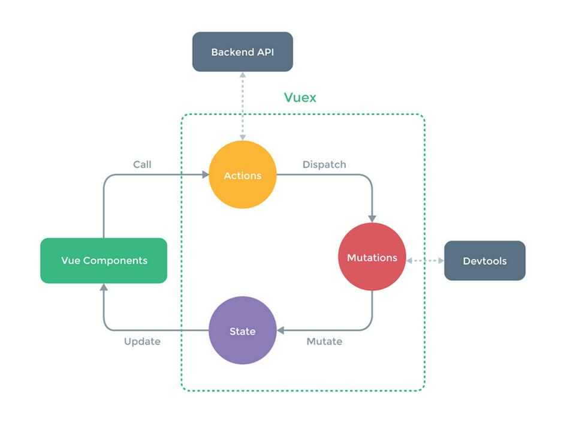

Vue.js
单页面应用(Single Page Web Application,SPA)
只有一张Web页面的应用,是一种从Web服务器加载的富客户端,单页面跳转仅刷新局部资源,公共资源(js、css等)仅需加载一次,常用于PC端官网、购物等网站
第一次进入页面的时候会请求一个html文件,刷新清除一下。切换到其他组件,此时路径也相应变化,但并没有新的html文件请求,页面内容也变化了。
原理：JS会感知到url的变化,通过这一点可以用js动态的将当前页面的内容清除掉,然后将下一个页面的内容挂载到当前页面上,这个时候的路由不是后端来做了,而是前端做,判断页面到底显示哪个组件,清除不需要的,显示需要的组件。这种过程就是单页应用,每次跳转时不需要再请求html文件了
优点：页面切换快
页面每次切换跳转时,并不需要做html文件的请求,这样就节约了很多http发送时延,在切换页面的时候速度很快。
缺点：首屏时间慢,SEO差
单页应用的首屏时间慢,首屏时需要请求一次html,同时还要发送一次js请求,两次请求回来了,首屏才会展示出来。相对于多页应用,首屏时间慢。
SEO效果差,因为搜索引擎只认识html里的内容,不认识js的内容,而单页应用的内容都是靠js渲染生成出来的,搜索引擎不识别这部分内容,也就不会给一个好的排名,导致单页应用做出来的网页在百度和谷歌上的排名差
Vue还提供了一些其它的技术来解决这些缺点,比如说服务器端渲染技术SSR,通过这些技术可以完美解决这些缺点,解决完这些问题,实际上单页面应用对于前端来说是非常完美的页面开发解决方案
多页面应用(MultiPage Application,MPA)
每一次页面跳转时后台服务器都会给返回一个新的html文档,这种类型的网站也就是多页网站或多页应用
多页面跳转刷新所有资源,每个公共资源(js、css等)需选择性重新加载,常用于app或客户端等
优点：
1、首屏时间快
首屏时间叫做页面首个屏幕的内容展现的时间,当访问页面时服务器返回一个html,页面就会展示出来,这个过程只经历了一个HTTP请求,所以页面展示的速度非常快
2、搜索引擎优化seo效果好
搜索引擎在做网页排名时要根据网页内容才能给网页权重,来进行网页的排名。搜索引擎是可以识别html内容的,而每个页面所有的内容都放在Html中,所以这种多页应用seo排名效果好
缺点：页面切换慢,因为每次跳转都需要发出一个http请求,如果网络比较慢,在页面之间来回跳转时就会发现明显的卡顿
mm 多页应用模式MPA 单页应用模式SPA
应用构成
由多个完整页面构成
一个外壳页面和多个页面片段构成
跳转方式
页面之间的跳转是从一个页面跳转到另一个页面
页面片段之间的跳转是把一个页面片段删除或隐藏,加载另一个页面片段并显示出来。这是片段之间的模拟跳转,并没有开壳页面
跳转后公共资源是否重新加载
是
否
URL模式
http://xxx/page1.html 和 http://xxx/page2.htmlhttp://xxx/shell.html#page1 和 http://xxx/shell.html#page2
用户体验
页面间切换加载慢,不流畅,用户体验差,特别是在移动设备上
页面片段间的切换快,用户体验好,包括在移动设备上
能否实现转场动画
无法实现
容易实现(手机app动效)
页面间传递数据
依赖URL传参、cookie或localstorage,实现麻烦
因为在一个页面内,页面间传递数据很容易实现(这里是我补充,父子之间传值,或vuex或storage之类)
搜索引擎优化(SEO)
可以直接做
需要单独方案做,有点麻烦
特别适用的范围
需要对搜索引擎友好的网站
对体验要求高的应用,特别是移动应用
搜索引擎优化(SEO)
可以直接做
需要单独方案做,有点麻烦
开发难度
低一些,框架选择容易
高一些,需要专门的框架来降低这种模式的开发难度
Vue(读音/vjuː/,类似于view)是一套用于构建用户界面的渐进式框架
与其它大型框架不同的是Vue被设计为可以自底向上逐层应用
Vue的核心库只关注视图层,不仅易于上手,还便于与第三方库或既有项目整合
当与现代化的工具链以及各种支持类库结合使用时,Vue也完全能够为复杂的单页应用提供驱动
类似前端框架：React、AngularJS
【 vuejs安装 】
安装独立版本
用script标签引入,Vue会被注册为一个全局变量,vuejs的生产版本没有压缩,可以直接查看源代码
CDN
制作原型或学习:https://cdn.jsdelivr.net/npm/vue
生产环境：https://cdn.jsdelivr.net/npm/vue@2.6.10/dist/vue.js
NPM安装
$ npm install vue
【 Vuejs特点 】
简洁：HTML模板+JSON数据,再创建一个Vue实例
数据驱动：自动追踪依赖的模板表达式和计算属性
组件化UI构建：用解耦、可复用的组件来构造界面
轻量：~24kb min+gzip,无依赖
快速：精确有效的异步批量DOM更新
模块友好：通过NPM或Bower安装,无缝融入工作流
可扩展的数据绑定机制
原生对象即模型
多个轻量库搭配使用
【 vue的集成场景 】
1、单页面、多页面引入vue.js
2、复杂单页面应用vue-cli工具
开发工作流：
1、需求调研,确定需求
2、交互设计、逻辑设计、接口设计
3、代码实现、测试运行、线上部署
【 Vue两大核心思想:组件化和数据驱动 】
1、组件化就是将一个整体合理拆分为一个个组件,组件可重复使用
组件系统是一种抽象,允许使用小型、独立和通常可复用的组件构建大型应用,几乎任意类型的应用界面都可以抽象为一个组件树
一个Vue组件本质上是一个拥有预定义选项的一个Vue实例
组件化可以拆分复杂的业务逻辑,实现功能模块的复用,有高的执行效率,可用来开发单页面的复杂应用
拆分原则：
1、300行原则
2、复用原则,如顶部导航、底部版权、侧边栏经常复用
3、业务复杂性原则
组件化带来的问题和解决方法
1、组件状态管理 - vuex
2、多组件混合使用,多页面,复杂业务 - vue-router
3、组件间的传参消息事件管理 - props、emit/on, bus
2、数据驱动是前端的未来发展方向,释放了对DOM的操作,让用户界面DOM随着数据的变化自然而然的变化,开发者不需要手动修改dom,不必过多的关注DOM,只需要将数据组织好即可
vuejs封装了数据和dom对象操作的映射,只需要关心数据的逻辑处理,数据的变化就能够自然的通知页面进行页面的重新渲染
创建Vue应用,数据和DOM建立关联,所有东西都是响应式的,在console可以输出app.message,修改app.message页面会进行相应的更新
MVVM框架
Vuejs的数据驱动是通过MVVM框架来实现的,MVVM框架主要包含3个部分:model、view和viewmodel。
Model:数据部分,对应到前端就是js对象
View:视图部分,对应前端就是dom
Viewmodel:连接视图与数据的中间件
view(DOM) <--> viewModel(vue = DOM listeners + Data bindings) <--> Model(plain js object)
创建一个view层HTML文件vueapp.html及model层文件vueapp.js,然后通过vue.js(使用v-model指令)完成中间的底层逻辑,实现绑定的效果。改变其中的任何一层,另外一层都会改变
数据(Model)和视图(View)是不能直接通讯的,而是需要通过ViewModel来实现双方的通讯。数据变化时viewModel能够监听到这种变化,并及时的通知view做出修改。同样当页面有事件触发时viewMOdel也能够监听到事件,并通知model进行响应。Viewmodel就相当于一个观察者,监控着双方的动作,并及时通知对方进行相应的操作
【 vuejs数据驱动的实现 】
简单的通过定时器来实现数据驱动功能,定时器定时监控对象数据,定时器监控数据变化,确定是否更新界面
vuejs是通过实现一个观察者来实现的数据驱动
vuejs在实例化的过程中会对传给实例化对象选项中的data选项,遍历其所有属性并使用Object.defineProperty把这些属性全部转为getter/setter
同时每一个实例对象都有一个watcher实例对象,会在模板编译的过程中用getter去访问data的属性,watcher此时就会把用到的data属性记为依赖,这样就建立了视图与数据之间的联系
当之后渲染视图的数据依赖发生改变(即数据的setter被调用)时,watcher会对比前后两个的数值是否发生变化,然后确定是否通知视图进行重新渲染。
这样就实现了所谓的数据对于视图的驱动
【 Vuejs运行机制的简单模拟,Vuejs响应的实现思路 】
【 todolist demo 】
构造器Vue实例
每个Vue.js应用都是通过构造函数Vue创建一个新Vue的根实例来启动的,创建一个Vue实例时可以传入一个选项对象
一个Vue应用由一个通过new Vue创建的根Vue实例及可选的嵌套的、可复用的组件树组成,一个todo应用的组件树可以是这样的：
根实例
└─TodoList
├─TodoItem
│ ├─DeleteTodoButton
│ └─EditTodoButton
└─TodoListFooter
├─ClearTodosButton
└─TodoListStatistics
【 声明式渲染 】
Vue.js的核心是一个允许采用简洁的模板语法来声明式地将数据渲染进DOM的系统
【 数据、属性和方法 】
当一个Vue实例被创建时,它向Vue的响应式系统中加入了其data对象中能找到的所有的属性。当这些属性的值发生改变时,视图将会产生响应,即匹配更新为新的值
当这些数据改变时视图会进行重渲染,只有当实例被创建时data中存在的属性才是响应式的,也就是说如果添加一个新的属性如vm.b = 'hi'那么对b的改动将不会触发任何视图的更新。如果在晚些时候需要一个属性,但一开始它为空或不存在,那么仅需要设置一些初始值0,false,null,'',[],{}
唯一的例外是使用Object.freeze(),这会阻止修改现有的属性,也意味着响应系统无法再追踪变化
每个Vue实例都会代理其data对象里所有的属性,设置Vue实例的属性也会影响到data对象内相应的数据除了data属性,Vue实例暴露一些有用的实例属性与方法,这些属性与方法都有前缀$,以便与代理的data属性区分
vue实例的选项对象
所有的Vue组件都是Vue实例,并且接受相同的选项对象(一些根实例特有的选项除外)
Vue框架的入口就是Vue实例,其实就是框架中的view model,它包含页面中的业务处理逻辑、数据模型等,它的生命周期中有多个事件钩子,在控制整个Vue实例的过程时更容易形成好的逻辑
在实例化Vue时需要传入一个选项对象,它可以包含数据(data)、模板(template)、挂载元素(el)、方法(methods)、生命周期钩子(lifecyclehook)等选项
【 组件/实例的选项的顺序 】
组件/实例的选项应该有统一的顺序,这是推荐的组件选项默认顺序,它们被划分为几大类
1、副作用(触发组件外的影响)
el
2、全局感知(要求组件以外的知识)
name、parent
3、组件类型(更改组件的类型)
functional
4、模板修改器(改变模板的编译方式)
delimiters、comments
5、模板依赖(模板内使用的资源)
components、directives、filters
6、组合(向选项里合并属性)
extends、mixins
7、接口(组件的接口)
inheritAttrs、model、props/propsData
8、本地状态(本地的响应式属性)
data、computed
9、事件(通过响应式事件触发的回调)
watch
10、生命周期钩子(按照它们被调用的顺序)
beforeCreate、created、beforeMount、mounted、beforeUpdate、updated、activated、deactivated、beforeDestroy、destroyed
11、非响应式的属性(不依赖响应系统的实例属性)
methods
12、渲染(组件输出的声明式描述)
template/render、renderErro
【 data 】
Vue实例的数据都保存在data对象中,Vue将会递归将data的属性转换为getter/setter,从而让data的属性能够响应数据变化
【 computed 数据联动 】
实例外的数据,计算属性将被混入到Vue实例中,所有getter和setter的this上下文自动地绑定Vue实例
【 methods 】
methods将被混入到Vue实例中,可以直接通过VM实例访问这些方法或者在指令表达式中使用。方法中的this自动绑定为Vue实例
methods和computed不同的是计算属性是基于它们的依赖进行缓存的,计算属性只有在它的相关依赖发生改变时才会重新求值,这就意味着只要message还没有发生改变,多次访问reversedMessage计算属性会立即返回之前的计算结果,而不必再次执行函数。相比而言,只要发生重新渲染,method调用总会执行该函数。
【 watch 异步场景 】
一个对象,键是需要观察的表达式,值是对应回调函数或方法名或包含选项的对象。Vue实例将会在实例化时调用$watch(),遍历watch对象的每一个属性
【 Vue实例的生命周期 】
Vue实例有一个完整的从创建到销毁的生命周期,从开始创建、初始化数据、编译模板、挂载Dom→渲染、更新→渲染、卸载等一系列过程称Vue的生命周期,它提供了一些生命周期钩子给予执行自定义逻辑的机会
Vue.nextTick
在下次DOM更新循环结束之后执行延迟回调。在修改数据之后立即使用这个方法获取更新后的DOM
Vue.nextTick(function() {
// DOM更新了
})
官方还提供了一种写法,vm.$nextTick,用this自动绑定到调用它的实例上
created() {
setTimeout(() => {
this.number = 100
this.$nextTick(() => {
console.log('nextTick', document.getElementsByTagName('p')[0])
})
},100)
}
什么时候需要用的Vue.nextTick()
在Vue生命周期的created()钩子函数进行的DOM操作一定要放在Vue.nextTick()的回调函数中
原因是在created()钩子函数执行时DOM其实并未进行任何渲染,而此时进行DOM操作无异于徒劳
所以此处一定要将DOM操作的js代码放进Vue.nextTick()的回调函数中
与之对应的就是mounted钩子函数,因为该钩子函数执行时所有的DOM挂载和渲染都已完成,此时在该钩子函数中进行任何DOM操作都不会有问题
在数据变化后要执行的某个操作,而这个操作需要使用随数据改变而改变的DOM结构的时候,这个操作都应该放进 Vue.nextTick() 的回调函数中
实例生命周期钩子
每个Vue实例在被创建时都要经过一系列的初始化过程,例如需要设置数据监听、编译模板、将实例挂载到DOM并在数据变化时更新DOM等。同时在这个过程中也会运行一些叫做生命周期钩子的函数,这给了用户在不同阶段添加自己的代码的机会
钩子在实例生命周期的不同阶段被调用
不要在选项属性或回调上使用箭头函数,比如created: () => console.log(this.a)或vm.$watch('a', newValue => this.myMethod()。因为箭头函数是和父级上下文绑定在一起的,this不会是预期的Vue实例,导致Uncaught TypeError: Cannot read property of undefined 或Uncaught TypeError: this.myMethod is not a function 之类的错误
钩子
Vue的实例是Vue框架的入口,担任MVVM中的ViewModel角色,所有功能的实现都是围绕其生命周期进行的,在生命周期的不同阶段调用对应的钩子函数可以实现组件数据管理和DOM渲染两大重要功能。例如,实例需要配置数据观测(data observer)、编译模版、挂载实例到DOM ,然后在数据变化时更新DOM。在这个过程中,事件钩子可以辅助我们对整个实例生成、编译、挂载、销毁等过程进行js控制,给我们提供了执行自定义逻辑的机会。所以学习实例的生命周期,能帮助我们理解vue实例的运行机制,更好地利用钩子函数完成我们的业务代码
钩子函数
指令定义函数提供了几个钩子函数(可选)：
bind: 只调用一次,指令第一次绑定到元素时调用,用这个钩子函数可以定义一个在绑定时执行一次的初始化动作。
inserted: 被绑定元素插入父节点时调用(父节点存在即可调用,不必存在于document中)。
update: 被绑定元素所在的模板更新时调用,而不论绑定值是否变化。通过比较更新前后的绑定值,可以忽略不必要的模板更新
componentUpdated: 被绑定元素所在模板完成一次更新周期时调用。
unbind: 只调用一次, 指令与元素解绑时调用。
钩子函数参数
el: 指令所绑定的元素,可以用来直接操作DOM。
binding: 一个对象,包含以下属性：
name: 指令名,不包括v-前缀。
value: 指令的绑定值,例如v-my-directive="1 + 1",value的值是2。
oldValue: 指令绑定的前一个值,仅在update和componentUpdated钩子中可用,无论值是否改变都可用。
expression: 绑定值的字符串形式,例如v-my-directive="1 + 1",expression 的值是 "1 + 1"。
arg: 传给指令的参数,如v-my-directive:foo, arg的值是"foo"。
modifiers: 一个包含修饰符的对象,例如v-my-directive.foo.bar,修饰符对象modifiers的值是 { foo: true, bar: true }。
vnode: Vue编译生成的虚拟节点
oldVnode: 上一个虚拟节点,仅在update和componentUpdated钩子中可用
【vue实例生命周期中的钩子函数】
beforeCreate
在实例初始化之后,数据观测(data observer)和event/watcher事件配置之前被调用,此时的数据观察和事件机制都未形成
可以在这加个loading事件,在加载实例时触发
created
实例已经创建完成之后同步调用,此时实例已经结束解析选项。在这一步实例已完成以下的配置：数据观测(data observer),属性和方法的运算, watch/event事件回调,此时this便指向vue实例。然而挂载阶段还没开始,还没有开始DOM编译,$el属性目前不可见
初始化完成时的事件写在这里,如在这结束loading事件,异步请求也适宜在这里调用
beforeMount
在挂载开始之前被调用：相关的render函数首次被调用,此时有了虚拟DOM
mounted
挂载元素,获取到DOM节点
el 被新创建的vm.$el 替换,并挂载到实例上去之后调用该钩子,渲染为真实DOM
如果root实例挂载了一个文档内元素,当mounted被调用时vm.$el 也在文档内
beforeUpdate
数据更新时调用,发生在虚拟DOM重新渲染和打补丁之前。 你可以在这个钩子中进一步地更改状态,这不会触发附加的重渲染过程
update
由于数据更改导致的虚拟DOM重新渲染和打补丁,在这之后会调用该钩子。
当这个钩子被调用时,组件DOM已经更新,所以你现在可以执行依赖于DOM的操作。然而在大多数情况下,你应该避免在此期间更改状态,因为这可能会导致更新无限循环。
该钩子在服务器端渲染期间不被调用
如果对数据统一处理,在这里写上相应函数
beforeDestroy
实例销毁之前调用。在这一步实例仍然完全可用
可以做一个确认停止事件的确认框
destroy
Vue实例销毁后调用。调用后Vue实例指示的所有东西都会解绑定,所有的事件监听器会被移除,所有的子实例也会被销毁。 该钩子在服务器端渲染期间不被调用
nextTick : 更新数据后立即操作dom
在实例中分别在每个生命周期钩子中console.log('钩子名称',this.number)
发现第一次页面加载时触发了beforeCreate, created, beforeMount, mounted这几个钩子,data数据在created中可获取到
再去console.log('mounted: ', document.getElementsByTagName('p')[0]),DOM渲染在mounted中已经完成
更改input输入框中的内容可以看到输入框上方的数据同步发生改变,这就是数据绑定的效果,在更新数据时触发beforeUpdate和updated钩子,且在beforeUpdate触发时数据已更新完毕。
而destroy仅在调用app.$destroy();时触发,对vue实例进行销毁。销毁完成后再重新改变number的值,vue不再对此动作进行响应了,但原先生成的dom元素还存在,可以这么理解,执行了destroy操作后续就不再受vue控制了
beforecreated el和data并未初始化
created 完成了data数据的初始化,el没有
beforeMount 完成了el和data初始化
mounted 完成挂载
beforeMount 挂载前状态
el还是 {{message}},这里就是应用的Virtual DOM(虚拟Dom)技术,先把坑占住了,到后面mounted挂载的时候再把值渲染进去
vuejs 模板语法
Vue.js使用了基于HTML的模版语法,允许开发者声明式地将DOM绑定至底层Vue实例的数据。
Vue.js的核心是一个允许采用简洁的模板语法来声明式的将数据渲染进DOM的系统。
结合响应系统,在应用状态改变时,Vue能够智能地计算出重新渲染组件的最小代价并应用到DOM操作上
指令是带有v-前缀的特殊属性,指令用于在表达式的值改变时,将某些行为应用到DOM上
v-bind、v-if
把数据绑定到DOM文本或特性,还可以绑定到DOM结构
Vue 也提供一个强大的过渡效果系统,可以在Vue插入/更新/移除元素时自动应用过渡效果
v-for 指令可以绑定数组的数据来渲染一个项目列表
处理用户输入
为了让用户和应用进行交互,可以用v-on指令添加一个事件监听器,通过它调用在Vue实例中定义的方法
Vue还提供了v-model指令,它能轻松实现表单输入和应用状态之间的双向绑定
【 元素特性的顺序 】
元素包括组件的特性应该有统一的顺序,这是为组件选项推荐的默认顺序,它们被划分为几大类,所以你也能知道新添加的自定义特性和指令应该放到哪里。
1、定义(提供组件的选项): is
2、列表渲染(创建多个变化的相同元素): v-for
3、条件渲染(元素是否渲染/显示): v-if、v-else-if、v-else、v-show、v-cloak
4、渲染方式(改变元素的渲染方式): v-pre、v-once
5、全局感知(需要超越组件的知识): id
6、唯一的特性(需要唯一值的特性): ref、key、slot
7、双向绑定(把绑定和事件结合起来): v-model
8、其它特性(所有普通的绑定或未绑定的特性)
9、事件(组件事件监听器): v-on
10、内容(覆写元素的内容): v-html、v-text
【 文本插值 】
数据绑定最常见的形式就是使用 {{...}}(双大括号)的文本插值
【 v-html指令 】
输出html代码
【 v-bind指令 】
属性绑定,绑定元素特性,html属性中的值,css/style/src/href/title/alt/type/id/name/disabled等
表达式的结果类型除了字符串之外还可以是对象或数组
v-bind:href="url"
:href="url" // 简写
多个class以对象显示
多个class以数组显示
多个class以数组显示-三元表达式
多个class以混合方式显示
v-bind:style内联样式
使用v-bind:style时Vue.js会自动侦测并添加CSS属性相应的前缀
绑定原生style需要用引号包裹属性和属性值
内联样式绑定对象
内联样式绑定多个对象
【 v-on指令 】
监听DOM事件
v-on:click="doSomething"
@click="doSomething" // 简写
事件修饰符是以半角句号.指明的特殊后缀,用于指出一个指定应该以特殊方式绑定
例如.prevent 修饰符告诉v-on指令对于触发的事件调用event.preventDefault();
.stop event.stopPropagation() 阻止事件的继续传播,冒泡
.capture 事件捕获模式
.self 只当事件在该元素本身(而不是子元素)触发时触发回调
.once 只能点击一次
获取事件对象event.target,不能用e和this(指向window),事件处理函数带参数和不带参数
按键修饰符
Vue允许为v-on在监听键盘事件时添加按键修饰符,有keyCode, Vue为最常用的按键提供了别名
全部的按键别名：
.enter、.tab、.delete(捕获删除和退格键)、.esc、.space、.up、.down、.left、.right、.ctrl、.alt、.shift、.meta(win键)
【 v-model指令 】
v-model指令在表单控件input、textarea及select元素上创建双向数据绑定,根据控件类型自动选取正确的方法来更新元素,负责监听用户的输入事件以更新数据,并对一些极端场景进行一些特殊处理
v-model会忽略所有表单元素的value、checked、selected特性的初始值而总是将Vue实例的数据作为数据来源,应该通过js在组件的data选项中声明初始值
下例p元素的内容会根据input输入框的改变而改变,如果不想改变可以修改为{{* message }}
v-model在内部为不同的输入元素使用不同的属性并抛出不同的事件：
text和textarea元素使用value属性和input事件；
checkbox和radio使用checked属性和change事件；
select字段将value作为prop并将change作为事件。
值绑定
对于单选按钮,复选框及选择框的选项,v-model绑定的值通常是静态字符串(对于复选框也可以是布尔值)：
当选中时`picked`为字符串"a"
< input type="radio" v-model="picked" value="a">
`toggle`为true或false
< input type="checkbox" v-model="toggle">
选中时`selected`为字符串"abc"
< select v-model="selected">
< option value="abc">ABC
但有时可能想把值绑定到Vue实例的一个动态属性上,这时可以用v-bind实现,并且这个属性的值可以不是字符串
复选框
< input type="checkbox" v-model="toggle" true-value="yes" false-value="no" >
vm.toggle === 'yes' // 当选中时
vm.toggle === 'no' // 当没有选中时
这里的true-value和false-value特性并不会影响输入控件的value特性,因为浏览器在提交表单时并不会包含未被选中的复选框。如果要确保表单中这两个值中的一个能够被提交,(比如yes或no),请换用单选按钮。
单选按钮
< input type="radio" v-model="pick" v-bind:value="a">
vm.pick === vm.a // 当选中时
选择框的选项
< select v-model="selected">
< option v-bind:value="{ number: 123 }">123 < !-- 内联对象字面量 -->
// 当选中时
typeof vm.selected // 'object'
vm.selected.number // 123
【 v-model修饰符 】
.lazy
默认v-model在input事件中同步输入框的值与数据,即keyup事件触发时更新数据
添加一个修饰符lazy,从而转变为在change事件中同步,即blur事件value变化触发change事件时才会同步数据
input v-model.lazy="msg"
.number
自动将用户的输入值转为Number类型,原值的转换结果为NaN则返回原值,这通常很有用,因为在type="number"时HTML中输入的值也总是会返回字符串类型。
input v-model.number="age" type="number"
.trim
自动过滤用户输入的首尾空格
input v-model.trim="msg"
【 watch侦听属性Vue实例对象的属性方法 】
一个对象,键是需要观察的表达式,值是对应回调函数或方法名或包含选项的对象。Vue实例将会在实例化时调用$watch(),遍历watch对象的每一个属性
不应该使用箭头函数来定义watcher函数(例如searchQuery: newValue => this.updateAutocomplete(newValue)
箭头函数绑定父级作用域的上下文,所以this不会按照期望指向Vue实例,this.updateAutocomplete将是undefined
当有一些数据需要随着其它数据变动而变动时,很容易滥用watch,然而通常更好的做法是使用计算属性而不是命令式的watch回调
Vue通过watch选项提供了一个更通用的方法来响应数据的变化,当需要在数据变化时执行异步或开销较大的操作时,这个方式是最有用的
使用watch选项允许执行异步操作(如ajax访问一个API),使用lodash限制执行该操作的频率,并在得到最终结果前设置中间状态,这些都是计算属性无法做到的
【 实例方法/数据 】
vm.$watch( expOrFn, callback, [options] )
观察Vue实例变化的一个表达式或计算属性函数。回调函数得到的参数为新值和旧值。表达式只接受监督的键路径。对于更复杂的表达式,用一个函数取代。
在变异(不是替换)对象或数组时旧值将与新值相同,因为它们的引用指向同一个对象/数组,Vue不会保留变异之前值的副本。
全选和取消全选: input[type=checkbox|radio] click事件
< input type="Checkbox" name="name" value="提交值" checked="checked" onclick="console.log(this.value, this.checked)">选项
第一次点击输出：提交值false,即checked取点击之后的值
在vue实例中input onclick属性中this指向window对象,不在vue实例中的时候指向input节点
< input type="radio" name="单选框名称" value="提交值" checked=" checked ">选项
【 v-if, v-else, v-else-if指令 】
条件渲染：条件判断是否渲染DOM节点
在v-if/v-if-else/v-else中使用key
如果一组v-if+v-else的元素类型相同,最好使用属性key(比如两个元素) 如果添加了属性key,那么在对比虚拟DOM时则会认为它们是两个同的节点,于是会将旧元素移除并在相同的位置添加一个新元素,从而避免意料之外的副作用
< div v-if="error" key="search-status">< /div>
< div v-else key="search-status">< /div>
【 v-show指令 】
根据条件展示元素
类似于v-if,不同的是v-show只是简单地切换元素的CSS属性display,带有v-show的元素始终会被渲染并保留在DOM中
v-show不支持template元素,也不支持v-else
v-if是真正的条件渲染,因为它会确保在切换过程中条件块内的事件监听器和子组件适当地被销毁和重建。
v-if也是惰性的,如果在初始渲染时条件为假则什么也不做,直到条件第一次变为真时才会开始渲染条件块。
v-show不管初始条件是什么元素总是会被渲染,并且只是简单地基于CSS进行切换
一般v-if有更高的切换开销,而v-show有更高的初始渲染开销,如果非常频繁地切换则使用v-show;如果在运行时条件很少改变则使用v-if较好
【 v-for指令 】
列表渲染,对应数据为整数、数组或对象
v-for="(item, index) in arr" :key="item" // :key可加快渲染,但须确保值唯一,item可能相同,所以应该用index
v-for="(value, key, index) in obj"
v-for="(item, index) of arr" // 可以使用of代替
v-for="(value, key, index) of obj"
遍历对象是按Object.keys()的结果遍历,但是不能保证它的结果在不同的JS引擎下是一致的
在组件上总是必须用key配合v-for,以便维护内部组件及其子树的状态。甚至在元素上维护可预测的行为,比如动画中的对象固化(object constancy),也是一种好的做法
< li v-for="todo in todos" :key="todo.id" > {{ todo.text }} < /li>
不要把v-if和v-for同时用在同一个元素上,一般在两种常见的情况下会倾向于这样做：
1、为了过滤一个列表中的项目,比如v-for="user in users" v-if="user.isActive",在这种情形下请将users替换为一个计算属性如activeUsers,让其返回过滤后的列表。
< li v-for="user in activeUsers" :key="user.id" > {{ user.name }} < /li>
2、为了避免渲染本应该被隐藏的列表,如v-for="user in users" v-if="showUsers",这种情形下请将v-if移动至容器元素上如ul,ol
< ul v-if="shouldShowUsers">< li v-for="user in users" :key="user.id">{{ user.name }}< /li>< /ul>
【 | 过滤器filters 】
Vue.js允许自定义过滤器,被用作一些常见的文本格式化,由"管道符"指示
在两个大括号中: {{ message | capitalize }}
过滤器可以串联：{{ message | filterA | filterB }}
在v-bind指令中: v-bind:id="rawId | formatId"
过滤器是Js函数,因此可以接受参数：
{{ message | filterA('arg1', arg2) }}
message是第一个参数,字符串'arg1'将传给过滤器作为第二个参数,arg2表达式的值将被求值然后传给过滤器作为第三个参数
【 计算属性关键词: computed 】
计算属性在处理一些复杂逻辑时是很有用的
可以使用methods来替代computed,效果上两个都是一样的
但computed是基于它的依赖缓存,只有相关依赖发生改变时才会重新取值
而使用methods在重新渲染的时候函数总会重新调用执行
methods需要在view层调用才会执行
可以说使用computed性能会更好,但是如果不希望缓存则可以使用methods属性
下面的计算属性将不再更新,因为Date.now()不是响应式依赖：
computed: {
now: function() {
return Date.now()
}
}
声明了一个计算属性reversedMessage
提供的函数将用作属性vm.reversedMessage的getter
vm.reversedMessage依赖于vm.message,在vm.message发生改变时vm.reversedMessage也会更新
computed对象内的方法如果在初始化时绑定到元素上的事件会先执行一次这个方法,而methods内的方法则不会
也可以用JS直接调用方法
当有一些数据需要随着其它数据变动而变动时,通常更好的做法是使用计算属性而不是命令式的watch回调
computed属性默认只有getter,不过在需要时也可以提供一个setter
localStorage动态数据存储
vue组件Component
组件Component是Vue.js最强大的功能之一,组件可以扩展HTML元素,封装可重用的代码。
组件系统可以用独立可复用的小组件来构建大型应用,几乎任意类型的应用的界面都可以抽象为一个组件树
在Vue里一个组件本质上是一个拥有预定义选项的一个Vue实例
【 全局组件 】
所有实例都能用全局组件
注册一个全局组件语法格式如下：
Vue.component(tagName, options)
tagName为组件名,options为配置选项对象
注册后就可以调用组件
组件名应该始终是多个单词的,根组件App及transition、component之类Vue内置组件除外,这样可避免跟现有及未来的HTML元素相冲突,因为所有的HTML元素名称都是单个单词的
【 局部组件 】
通过某个Vue实例/组件的实例选项components注册仅在其作用域中可用的组件
构造Vue实例时传入的各种选项大多都可以在组件里使用,只有一个例外：data必须是函数,不能是对象,否则vue停止运行并在控制台发出警告
【 组件组合 】
组件设计初衷就是要配合使用的,最常见的就是形成父子组件的关系：组件A在它的模板中使用了组件B,它们之间必然需要相互通信：父组件可能要给子组件下发数据,子组件则可能要将它内部发生的事情告知父组件。然而通过一个良好定义的接口来尽可能将父子组件解耦也是很重要的,这保证每个组件的代码可以在相对隔离的环境中书写和理解,从而提高可维护性和复用性。
在Vue中父子组件的关系可以总结为prop向下传递,事件向上传递。父组件通过prop给子组件下发数据,子组件通过事件给父组件发送消息
parent --> pass props --> child
parent <-- emit events <-- child
【 Prop 】
组件实例的作用域是孤立的,这意味着不能在子组件的模板内直接引用父组件的数据,父组件的数据需要通过prop才能下发到子组件中,子组件要显式地用props选项声明它预期的数据
prop是父组件用来传递数据的一个自定义属性。
prop是单向绑定的：当父组件的属性变化时将传导给子组件,但不会反过来
HTML特性是不区分大小写的,所以当使用的不是字符串模板时,camelCase(驼峰式命名)的prop需要转换为相对应的kebab-case(短横线分隔式命名)：
如果使用字符串模板则没有这些限制
在JS中使用camelCase,即子组件定义的时候
在HTML中使用kebab-case,即组件调用的时候
在声明prop的时候其命名应该始终使用camelCase,而在模板和JSX中应该始终使用kebab-case。
单纯的遵循每个语言的约定,js中更自然的是camelCase,HTML中则是kebab-case。
【 动态Prop 】
类似于用v-bind绑定HTML特性到一个表达式,也可以用v-bind动态绑定props的值到父组件的数据中,每当父组件的数据变化时该变化也会传导给子组件
使用不带任何参数的v-bind把一个对象的所有属性作为prop进行传递
每次父组件更新时子组件的所有prop都会更新为最新值,这意味着不应该在子组件内部改变prop
在js中对象和数组是引用类型,指向同一个内存空间,如果prop是一个对象或数组,在子组件内部改变它会影响父组件的状态
在两种情况下很容易忍不住想去修改prop中数据：
Prop作为初始值传入后,子组件想把它当作局部数据来用;
Prop作为原始数据传入,由子组件处理成其它数据输出。
对这两种情况,正确的应对方式是：
【 Prop验证 】
可以为组件的prop指定验证规则,如果传入的数据不符合要求Vue会发出警告,这对于开发给他人使用的组件非常有用
指定验证规则需要用对象的形式来定义prop,而不能用字符串数组,它包含验证要求：
type可以是原生构造器：String / Number / Boolean / Function / Object / Array,也可以是一个自定义构造器,使用instanceof检测
prop会在组件实例创建之前进行校验,所以在default或validator函数里,诸如data、computed或methods等实例属性还无法使用
prop的定义应该尽量详细,至少需要指定其类型
【 自定义事件 】
父组件是使用props传递数据给子组件,子组件要把数据传递回去就需要使用自定义事件
可以使用v-on绑定自定义事件,每个Vue实例都实现了事件接口(Events interface),即：
使用$on(eventName)监听事件
使用$emit(eventName)触发事件,父组件可以在使用子组件的地方直接用v-on来监听子组件触发的事件
父子组件的关系可以总结为prop向下传递,事件向上传递,父组件通过prop给子组件下发数据,子组件通过事件给父组件发送消息
子组件已经和它外部完全解耦了,它所做的只是报告自己的内部事件,因为父组件可能会关心这些事件
Vue的事件系统与浏览器的EventTarget API有所不同,尽管它们的运行起来类似,但是$on和$emit并不是addEventListener和dispatchEvent的别名
如果想在某个组件的根元素上监听一个原生事件,可以使用.native修饰v-on,例如：
< my-component v-on:click.native="doTheThing">< /my-component>
【 使用自定义事件的表单输入组件 】
自定义事件可以用来创建自定义的表单输入组件,使用v-model来进行数据双向绑定
所以要让组件的v-model生效,它应该(从2.2.0起是可配置的)：
1、接受一个value prop
2、在有新的值时触发input事件并将新值作为参数
组件并不是真实的DOM节点,而是存在于内存之中的一种数据结构,叫做虚拟DOM(virtual DOM),只有当它插入文档以后才会变成真实的DOM
有时需要从组件获取真实DOM的节点,这时就要用到ref属性,ref被用来给元素或子组件注册引用信息,引用信息将会注册在父组件的$refs对象上;如果在普通的DOM元素上使用,引用指向的就是DOM元素,如果用在子组件上,引用就执行组件实例
【 model选项 单选框、复选框的v-model 】
默认一个组件的v-model会使用value prop和input事件,但诸如单选框、复选框之类的输入类型可能把value用作了别的目的,model选项可以避免这样的冲突
使用v-model实现弹窗组件 父子组件之间的通信交互
【 非父子组件的通信 】
有时候非父子关系的两个组件之间也需要通信,复杂的情况下考虑使用专门的状态管理模式vuex,简单的场景下可以使用一个空的Vue实例作为事件总线
使用插槽分发内容
在使用组件时常常要像这样组合它们：
注意两点：
app组件不知道它会收到什么内容,这是由使用app的父组件决定的
app组件很可能有它自己的模板
为了让组件可以组合,需要一种方式来混合父组件的内容与子组件自己的模板,这个过程被称为内容分发
Vue.js实现了一个内容分发API,参照了当前Web Components规范草案,使用特殊的slot标签元素作为原始内容的插槽
组件作用域
父组件模板的内容在父组件作用域内编译;子组件模板的内容在子组件作用域内编译
模板中message应该绑定到父组件的数据,还是绑定到子组件的数据？答案是父组件
< child-component> {{ message }} < /child-component>
【 单个插槽 】
除非子组件模板包含至少一个＜slot＞插口,否则父组件的内容将会被丢弃
当子组件模板只有一个没有属性的插槽时,父组件传入的整个内容片段将插入到插槽所在的DOM位置,并替换掉插槽标签本身
最初在＜slot＞标签中的任何内容都被视为备用内容,备用内容在子组件的作用域内编译,且只有在宿主元素为空,且没有要插入的内容时才显示备用内容
【 具名插槽 】
slot元素可以用一个特殊的特性name来进一步配置如何分发内容,多个插槽可以有不同的名字,具名插槽将匹配内容片段中有对应slot特性的元素
仍然可以有一个匿名插槽,它是默认插槽,作为找不到匹配的内容片段的备用插槽,如果没有默认插槽则这些找不到匹配的内容片段将被抛弃。
在设计组合使用的组件时内容分发API是非常有用的机制
【 作用域插槽 】
作用域插槽是一种特殊类型的插槽,用作一个(能被传递数据的)可重用模板来代替已经渲染好的元素
在子组件中只需将数据传递到插槽,就像将prop传递给组件一样：
在父级中具有特殊特性slot-scope的元素必须存在,表示它是作用域插槽的模板。slot-scope的值将被用作一个临时变量名,此变量接收从子组件传递过来的prop对象：
作用域插槽更典型的用例是在列表组件中,允许使用者自定义如何渲染列表的每一项
解构
slot-scope的值实际上是一个可以出现在函数签名参数位置的合法的Js表达式,这意味着在受支持的环境(单文件组件或现代浏览器)中还可以在表达式中使用ES2015解构：
【 动态组件 】
通过使用保留的component元素,并对其is特性进行动态绑定,可以在同一个挂载点动态切换多个组件
【 keep-alive 】
如果把切换出去的组件保留在内存中,可以保留它的状态或避免重新渲染,为此可以添加一个keep-alive指令参数：
Posts标签内选择了一篇文章,切换到Archive标签,然后再切换回Posts,是不会继续展示之前选择的文章的,这是因为每次切换新标签时Vue都创建了一个新的currentTabComponent实例
【 编写可复用组件 】
编写组件时最好考虑好以后是否要进行复用。一次性组件间有紧密的耦合没关系,但是可复用组件应当定义一个清晰的公开接口,同时也不要对其使用的外层数据作出任何假设
Vue组件的API来自三部分——prop、事件和插槽：
Prop允许外部环境传递数据给组件;
事件允许从组件内触发外部环境的副作用;
插槽允许外部环境将额外的内容组合在组件中
【 子组件引用ref 】
尽管有prop和事件,但是有时仍需要在Js中直接访问子组件,为此可以使用ref为子组件指定一个引用ID
当ref和v-for一起使用时,获取到的引用会是一个数组,包含和循环数据源对应的子组件。
$refs只在组件渲染完成后才填充,并且它是非响应式的。它仅仅是一个直接操作子组件的应急方案——应当避免在模板或计算属性中使用$refs
【 异步组件 】
在大型应用中可能需要将应用拆分为多个小模块,按需从服务器下载
为了进一步简化,Vue.js允许将组件定义为一个工厂函数,异步地解析组件的定义。
Vue.js只在组件需要渲染时触发工厂函数,并且把结果缓存起来,用于后面的再次渲染
处理加载状态
异步组件工厂函数也可以返回一个如下格式的对象
【 递归组件 】
组件在它的模板内可以递归地调用自己,不过只有当它有name选项时才可以这么做：
name: 'unique-name-of-my-component'
当利用Vue.component全局注册了一个组件,全局的ID会被自动设置为组件的name
Vue.component('unique-name-of-my-component', {
// ...
})
稍有不慎,递归组件可能导致死循环,一个"max stack size exceeded"错误,所以要确保递归调用有终止条件,比如递归调用时使用v-if并最终解析为false
【 组件间的循环引用 】
假设正在构建一个类似资源管理器中文件目录树
在渲染树上这两个组件同时为对方的父节点和子节点,这是矛盾,当使用Vue.component将这两个组件注册为全局组件时框架会自动解决这个矛盾
然而如果使用诸如webpack或Browserify之类的模块化管理工具来require/import组件就会报错：Failed to mount component: template or render function not defined.
简单的将上面两个组件称为A和B,模块系统看到它需要A,但首先A需要B,但B需要A,而A需要B,循环往复,因为不知道到底应该先解析哪个,所以将会陷入无限循环。
要解决这个问题,需要在其中一个组件中告诉模块化管理系统："A虽然最后会用到B,但不需要优先导入B"。
可以选择让tree-folder组件中来做这件事,引起矛盾的子组件是tree-folder-contents,所以要等到beforeCreate生命周期钩子才去注册它就可以了
beforeCreate: function() {
this.$options.components.TreeFolderContents = require('./tree-folder-contents.vue')
}
【 内联模板 】
如果子组件有inline-template特性,组件将把它的内容当作它的模板,而不是把它当作分发内容,这让模板编写起来更灵活。
但inline-template让模板的作用域难以理解,使用template选项在组件内定义模板或在.vue文件中使用template元素才是最佳实践。
X-Template
另一种定义模板的方式是在js标签里使用text/x-template类型并指定一个id
这在有很多大模板的演示应用或者特别小的应用中可能有用,其它场合应该避免使用,因为这将模板和组件的其它定义分离了。
【 对低开销的静态组件使用v-once 】
尽管在Vue中渲染HTML很快,不过当组件中包含大量静态内容时可以考虑使用v-once将渲染结果缓存起来
Vue.js自定义指令
除了默认设置的核心指令,Vue也允许注册自定义指令
全局指令
局部指令：只能在当前Vue实例中使用
单文件组件
在很多Vue项目中使用Vue.component定义全局组件，紧接着用new Vue({ el: '#container '})在每个页面内指定一个容器元素。
这种方式在很多中小规模的项目中运作的很好,在这些项目里JS只被用来加强特定的视图,但当在更复杂的项目中或前端完全由JS驱动的时候，下面这些缺点将变得非常明显：
全局定义 (Global definitions) 强制要求每个component中的命名不得重复
字符串模板 (String templates) 缺乏语法高亮，在HTML有多行的时候需要用到丑陋的\
不支持CSS (No CSS support) 意味着当HTML和JavaScript组件化时CSS明显被遗漏
没有构建步骤 (No build step) 限制只能使用HTML和ES5 JavaScript，而不能使用预处理器如Pug(formerly Jade)和Babel
文件扩展名为.vue的single-file components(单文件组件) 为以上所有问题提供了解决方法，并且还可以使用webpack或Browserify等构建工具
通过单文件组件可以获得完整语法高亮、CommonJS模块、组件作用域的CSS
每一个vue组件都是一个vue实例
单词大写开头对于代码编辑器的自动补全最为友好,因为这使得在JS(X)和模板中引用组件的方式尽可能的一致。然而混用文件命名方式有的时候会导致大小写不敏感的文件系统的问题,这也是横线连接命名同样完全可取的原因
components/
|- MyComponent.vue
|- my-component.vue
应用特定样式和约定的基础组件(也就是展示类的、无逻辑的或无状态的组件) 应该全部以一个特定的前缀开头,比如 Base、App 或 V
components/
|- BaseButton.vue
|- BaseTable.vue
|- BaseIcon.vue
|- AppButton.vue
|- AppTable.vue
|- AppIcon.vue
|- VButton.vue
|- VTable.vue
|- VIcon.vue
单例组件名
只应该拥有单个活跃实例的组件应该以The前缀命名,以示其唯一性。
这不意味着组件只可用于一个单页面,而是每个页面只使用一次。这些组件永远不接受任何prop,因为它们是为你的应用定制的,而不是它们在你的应用中的上下文。如果发现有必要添加prop,那就表明这实际上是一个可复用的组件,只是目前在每个页面里只使用一次
components/
|- TheHeading.vue
|- TheSidebar.vue
紧密耦合的组件名
和父组件紧密耦合的子组件应该以父组件名作为前缀命名。
如果一个组件只在某个父组件的场景下有意义,这层关系应该体现在其名字上。因为编辑器通常会按字母顺序组织文件,所以这样做可以把相关联的文件排在一起。
components/
|- TodoList.vue
|- TodoListItem.vue
|- TodoListItemButton.vue
|- SearchSidebar.vue
|- SearchSidebarNavigation.vue
组件名中的单词顺序
组件名应该以高级别的(通常是一般化描述的) 单词开头,以描述性的修饰词结尾。
components/
|- SearchButtonClear.vue
|- SearchButtonRun.vue
|- SearchInputQuery.vue
|- SearchInputExcludeGlob.vue
|- SettingsCheckboxTerms.vue
|- SettingsCheckboxLaunchOnStartup.vue
自闭合组件
在单文件组件、字符串模板和JSX中没有内容的组件应该是自闭合的,但在DOM模板里永远不要这样做。
// 在单文件组件、字符串模板和JSX中
< MyComponent/>
// 在DOM模板中
< my-component>< /my-component>
模板中的组件名大小写
对于绝大多数项目来说,在单文件组件和字符串模板中组件名应该总是 PascalCase 的,但是在 DOM 模板中总是 kebab-case 的。
PascalCase 相比 kebab-case 有一些优势：
编辑器可以在模板里自动补全组件名,因为PascalCase同样适用于JavaScript。
< MyComponent >视觉上比< my-component >更能够和单个单词的HTML元素区别开来,因为前者的不同之处有两个大写字母,后者只有一个横线。
如果在模板中使用任何非Vue的自定义元素,比如一个Web Component,PascalCase确保了你的Vue组件在视觉上仍然是易识别的。
不幸的是,由于HTML是大小写不敏感的,在DOM模板中必须仍使用kebab-case。
如果你已经是kebab-case的重度用户,那么与HTML保持一致的命名约定且在多个项目中保持相同的大小写规则就可能比上述优势更为重要了。在这些情况下,在所有的地方都使用kebab-case同样是可以接受的。
// 在单文件组件和字符串模板中
< MyComponent/>
// 在DOM模板中
< my-component>< /my-component>
// 或者在所有地方
< my-component>< /my-component>
JS/JSX中的组件名大小写
JS/JSX中的组件名应该始终是PascalCase的,尽管在较为简单的应用中只使用Vue.component进行全局组件注册时可以使用kebab-case字符串。
Vue.component('MyComponent', {
// ...
})
Vue.component('my-component', {
// ...
})
import MyComponent from './MyComponent.vue'
export default {
name: 'MyComponent',
// ...
}
完整单词的组件名
组件名应该倾向于完整单词而不是缩写,编辑器中的自动补全已经让书写长命名的代价非常之低了,而其带来的明确性却是非常宝贵的。不常用的缩写尤其应该避免。
.vue文件中export default后面的对象就相当于new Vue()构造函数中的接受的对象,它们都是定义组件所需要的数据data以及操作数据的方法等
更为全面的一个export default对象,有methods, data, computed,这个对象和new Vue()构造函数中接受的对象是一模一样的
但在.vue组件data必须是一个函数,它return返回一个对象,这个返回的对象的数据,供组件实现
父子组件之间的通信
每一个.vue文件就是一个组件,组件和组件相互组合就成了一个应用,这就涉及到的组件和组件之间的通信,最常用的就是父子之间的通信。在vue中在一个组件中通过import引入另一个组件,这个组件就是父组件,被引入的组件就是子组件
在vue-cli项目中src文件夹下有一个App.vue文件,它的script标签中import Hello from './components/Hello',那么App.vue就是父组件,components文件夹下的Hello.vue就是子组件。
父组件通过props向子组件传递数据,子组件通过自定义事件向父组件传递数据
父组件向子组件传递数据时,html不区分大小写,但是js区分大小写,js中习惯用驼峰命名法,所以vue做了一个转化,如果在组件中属性是-表示,它自动会转化成驼峰式。
传进来的数据是mes-father,转化成mesFather, 在js里面写mesFather, 一一对应,子组件可以接受到组件。
props属性是和data, methods属性并列的,属同一级别。props属性里面定义的变量,在子组件中的template中可以直接使用
使用预处理器来构建简洁和功能更丰富的组件,比如Pug、Babel(with ES2015 modules)和Stylus
Vuejs路由
Vuejs路由允许通过不同的URL访问不同的内容。
通过Vuejs可以实现多视图的单页Web应用(single page web application,SPA),Vue.js+vue-router可以很简单的实现单页应用,使用Vue.js已经可以通过组合组件来组成应用程序,当要把vue-router添加进来,需要做的是将组件(components)映射到路由(routes),然后告诉vue-router在哪里渲染它们
Vue.js路由需要载入vue-router库
npm install vue-router
直接下载/CDN
https://unpkg.com/vue-router/dist/vue-router.js
this.$router和router使用起来完全一样,使用this.$router的原因是并不想在每个独立需要封装路由的组件中都导入路由
匹配优先级
有时候同一个路径可以匹配多个路由,此时匹配的优先级就按照路由的定义顺序：谁先定义的,谁的优先级就最高。
路由class匹配
< router-link>路由匹配后会给该标签添加class属性值.router-link-active,该功能在嵌套路由中十分方便
class的实际属性值可以通过< router-link>的active-class来控制,全局默认值则通过路由构造选项linkActiveClass来控制
默认当前路由的所有父级会默认添加active-class ,即当前处于/user/1会给当前页面的< router-link to="/">添加active-class,如果不需要此项则给< router-link>添加exact即可,精准匹配的class通过exact-active-class控制
通过注入路由器,可以在任何组件内通过this.$router访问路由器,也可以通过this.$route访问当前路由
【 路由元信息 】
定义路由的时候可以配置meta字段可以匹配meta字段
异步加载组件、按需加载和导航钩子
【 动态路由匹配 】
把某种模式匹配到的所有路由,全都映射到同个组件
一个“路径参数”使用冒号 : 标记
当匹配到一个路由时,参数值会被设置到this.$route.params,可以在每个组件内使用
除了$route.params外,$route对象还提供了其它有用的信息,如$route.query查询参数、$route.hash等
对所有ID各不相同的用户都使用User组件来渲染,可以在vue-router的路由路径中使用“动态路径参数”(dynamic segment)来达到这个效果
【 响应路由参数的变化 】
当使用路由参数时从/user/foo导航到/user/bar,原来的组件实例会被复用。因为两个路由都渲染同个组件,比起销毁再创建,复用则显得更加高效。不过这也意味着组件的生命周期钩子不会再被调用,想对路由参数的变化作出响应的话,可以简单地watch $route对象
to对象表示导航之后的当前路由,from对象表示导航前的路由
【 捕获所有路由或404Not found路由 】
常规参数只会匹配被/分隔的URL片段中的字符,如果想匹配任意路径可以使用通配符(*)
当使用通配符路由时请确保路由的顺序是正确的,即含有通配符的路由应该放在最后
如果使用了History模式,请确保正确配置服务器。
path: '*' // 匹配所有路径,通常用于客户端404错误
path: '/user-*' // 匹配以`/user-`开头的任意路径
当使用一个通配符时$route.params内会自动添加一个名为pathMatch参数,它包含了URL通过通配符被匹配的部分：
this.$router.push('/user-admin') // 给出一个路由 { path: '/user-*' }
this.$route.params.pathMatch // 'admin'
this.$router.push('/non-existing') // 给出一个路由 { path: '*' }
this.$route.params.pathMatch // '/non-existing'
高级匹配模式
vue-router使用path-to-regexp作为路径匹配引擎,所以支持很多高级的匹配模式,例如：可选的动态路径参数、匹配零个或多个、一个或多个,甚至是自定义正则匹配
路由的原理
vue-router使用path-to-regexp插件来实现,该插件是将路由record中定义的路径规则-path转化成正则表达式对象-regexp,然后将用户实际输入的路由的路径拿来匹配所有的预先转化的正则表达式对象。如果符合就动态加载路由相应的路由record中对应组件。
【 路由参数 】
path-to-regexp插件规定：路径中/分隔的片段为路由参数,分为普通路由参数和命名路由参数。
{ path: '/user/:id', name: 'user', component: User } // user为普通路由参数,需要完全匹配,:id为命名路由参数
路由参数的名称必须由"单词字符"([A-Za-z0-9_])组成。
【 路由参数修饰符 】
? 表示0个或1个,匹配/user、/user/1,不匹配/user/1/2
{ path: '/user/:id?', name: 'user', component: User }
+ 表示1个或多个,/user/11/22/33时$route中id的值为'11/22/33'
{ path: '/user/:id+', name: 'user', component: User }
* 匹配任何字符,匹配/user、/user/1、/user/abc,不传id时$route中id为undefined
{ path: '/user/:id*', name: 'user', component: User }
命名参数后接括号括起来的正则表达式(regexp),id参数为数字匹配/user/1,id参数不为数字不匹配匹配/user/foo
{ path: '/user/:id(\\d+)', name: 'user', component: User }
不写命名参数直接写正则,/user/11/22时$route中params的值为{0: 11, 1:22},匹配的第一个值的key为0,第二个为1,类推
{ path: '/user/(//d+)/(//d+)', name: 'user', component: User }
嵌套路由
实际生活中的应用界面,通常由多层嵌套的组件组合而成。同样地URL中各段动态路径也按某种结构对应嵌套的各层组件,借助 vue-router使用嵌套路由配置就可以很简单地表达这种关系
【 编程式的导航 】
除了使用router-link创建a标签来定义导航链接,还可以借助router的实例方法通过编写代码来实现
1、router.push(location, onComplete?, onAbort?)
Vue实例内部可以通过$router访问路由实例,因此可以调用this.$router.push。
该方法会向history栈添加一个新的记录,所以当用户点击浏览器后退按钮时则回到之前的URL
点击router-link时push方法会在内部调用,所以点击router-link :to="..."等同于调用router.push(...)
该方法的参数可以是一个字符串路径,或者一个描述地址的对象
router.push('home') // 字符串
router.push({ path: 'home' }) // 对象
router.push({ name: 'user', params: { userId: '123' }}) // 命名的路由
router.push({ path: 'register', query: { plan: 'private' }}) // 带查询参数,变成 /register?plan=private
如果提供了path则params会被忽略,需要提供路由的name或手写完整的带有参数的path,同样的规则也适用于router-link组件的to属性
const userId = '123'
router.push({ name: 'user', params: { userId }}) // /user/123
router.push({ path: `/user/${userId}` }) // /user/123
router.push({ path: '/user', params: { userId }}) // /user, 这里的params不生效
可选的在router.push或router.replace中提供onComplete和onAbort回调作为第二和三个参数。这些回调将会在导航成功完成(在所有的异步钩子被解析之后) 或终止(导航到相同的路由或在当前导航完成之前导航到另一个不同的路由)的时候进行相应的调用。
该功能可用在少数埋点场景,而不用配置复杂的路由钩子
如果目的地和当前路由相同,只有参数发生了改变,如从一个用户资料到另一个/users/1 -> /users/2,需要使用beforeRouteUpdate来响应这个变化如抓取用户信息
2、router.replace(location, onComplete?, onAbort?)
跟router.push很像,不同的是它不会向history添加新记录,而是替换掉当前的history记录
点击< router-link :to="..." replace>等同于调用router.replace(...)
3、router.go(n)
这个方法的参数是一个整数,意思是在history记录中向前或后退多少步,类似window.history.go(n)。
router.go(1) // 在浏览器记录中前进一步,等同于 history.forward()
router.go(-1) // 后退一步记录,等同于 history.back()
router.go(3) // 前进 3 步记录
// 如果history记录不够用就默默地失败
router.go(-100)
router.go(100)
4、操作History
router.push、 router.replace和router.go类似于window.history.pushState、 window.history.replaceState和window.history.go,实际上它们确实是效仿window.history API
Vue Router的导航方法(push、 replace、 go) 在各类路由模式(history、 hash 和 abstract) 下表现一致
【 命名路由 】
有时候通过一个名称来标识一个路由显得更方便一些,特别是在链接一个路由或是执行一些跳转的时候
【 命名视图 】
有时候想同时同级展示多个视图,而不是嵌套展示,例如创建一个有sidebar和main两个视图的布局,这个时候命名视图就派上用场了
可以在界面中通过定义name属性值拥有多个单独命名的视图,而不是只有一个单独的出口。如果router-view没有设置名字则默认default
一个视图使用一个组件渲染,因此对于同个路由多个视图就需要多个组件,确保正确使用components配置
【 嵌套命名视图 】
也有可能使用命名视图创建嵌套视图的复杂布局,这时也需要命名用到的嵌套router-view组件
【 重定向 】
重定向是当用户访问/a时URL将会被替换成/b,然后匹配路由为/b,重定向也是通过routes配置来完成
导航守卫并没有应用在跳转路由上,而仅仅应用在其目标上
给重定向的中间路由添加beforeEach和beforeLeave不会有效果,给router添加的钩子也不能检测到此次重定向,如果需要判断重定向来源,可使用路由对象$route.redirectedFrom判断
该功能适合路由path修改后保留原路由的重定向
【 别名 】
/a的别名是/b,意味着当用户访问/b时URL会保持为/b,但是路由匹配则为/a,就像用户访问/a一样
“别名”的功能让你可以自由地将UI结构映射到任意的URL,而不是受限于配置的嵌套路由结构
该属性支持String和Array两种类型,当alias与其他路由重复时,以先申明的路由为准,同时别名不会进行路由class匹配
【 路由组件传参 】
在组件中使用$route会使之与其对应路由形成高度耦合,从而使组件只能在某些特定的URL上使用,限制了其灵活性。
使用props将组件和路由解耦,这样便可以在任何地方使用该组件,使得该组件更易于重用和测试
该功能旨在给组件与路由解除耦合关系,给route配置props: true,同时组件内props配置与prams相同的变量,可以直接通过访问props,而不用通过$route.params去访问参数
如果props是一个对象,对象内容会当作静态内容传入组件作为props
当props为一个函数,函数接收一个route参数,可以使query作为props传入组件或实现更多高级功能
路由切换组件不变
在使用vue 开发中,最常碰到的一个问题就是,当页面切换到同一个路由但是不同参数的地址时,组件的生命钩子不会触发
因为vue-router 会识别两个路由使用的是一个组件从而进行复用,并不会重新创建组件,因此组件的生命周期钩子也不会触发.
方案一 :路由导航守卫
可以使用路由提供的beforeRouteUpdate守卫触发,只需要将需要执行的逻辑放到守卫中即可. 如在守卫中发送请求,更新状态并重新渲染页面.
方案二 : 观察$route对象的变化
通过watch 可以监听到路由对象的变化,从而对路由变化做出响应
const User = {
template:'...',
watch:{
$router(to,form){
//做出的反应
}
}
}
方案三 : 为router-view 组件添加属性key
通过给router-view组件设置key,可以使每次切换路由时key都不一样,让虚拟DOM认为router-view组件是一个新节点,从而销毁组件创建新组件 缺点是浪费性能
< router-view :key="router.fullpath">< /router-view>
HTML5 History模式
路由是每个单页面应用必须要有的,以下介绍几种路由实现方式：
1、url完全不动型这一种情况是url完全不动,即页面怎么改变怎么跳转url都不会改变;这种情况的原理就是纯ajax拿到页面后替换原页面中的元素。
ajax带来了提高用户体验、减少http请求数等好处的同时,也显露出不足：无法使用浏览器前进后退来切换前后数据,单纯的使用ajax不利于搜索引擎优化
2、带hash(#)型这种类型的优点就是刷新页面,页面也不会丢。window.addEventListener(‘hashchange‘,function(){self.urlChange()})只要#location.hash改变了即可触发,这也是很多单页面网站的url都带#的原因。
3、无hash(#)型这种类型是通过html5的最新history api来实现的,能正常的回退前进。url是这样的www.ff.ff/jjkj/fdfd/fdf/fd和普通的url一样,但是也有缺点,就是一刷新页面页面就会丢,因为只要刷新这个url(www.ff.ff/jjkj/fdfd/fdf/fd)就会请求服务器,然而服务器上根本没有这个资源,所以就会报404,解决方案就配置一下服务器端重写路由规则使所有请求全部重写到index.html
vue-router有两种模式:hash模式和history模式,默认hash模式,使用URL的hash来模拟一个完整的URL,于是当URL改变时页面不会重新加载。
单页应用使得页面可以在无刷新的条件下重新渲染,通过hash或html5 Bom对象中的history可以做到改变url,但是不刷新页面
【 hash模式 】
hash模式背后的原理是onhashchange事件,可以在window对象上监听这个事件
类似这种: http://music.163.com/#/friend、https://pan.baidu.com/disk/home#list/vmode=list
改变url的hash值是不会刷新页面的。
因此可以通过hash来实现前端路由,从而实现无刷新的效果。hash属性位于location对象中,在当前页面中,可以通过：
window.location.hash='edit'
来实现改变当前url的hash值。执行上述的hash赋值后,页面的url发生改变。
赋值前：http://localhost:3000
赋值后：http://localhost:3000/#edit
在url中多了以#结尾的hash值,但是赋值前后虽然页面的hash值改变导致页面完整的url发生了改变,但是页面是不会刷新的。
此外,除了可以通过window.location.hash来改变当前页面的hash值外,还可以通过html的a标签来实现：
< a href="#edit">edit< /a>
可以通过改变hash来改变页面字体颜色
hash发生变化的url都会被浏览器记录下来,从而浏览器的前进后退都可以用了,尽管浏览器没有请求服务器,但是页面状态和url一一关联起来,后来人们给它起了一个霸气的名字叫前端路由,成为了单页应用标配。
【 通过history实现前端路由 】
随着html5 history api的到来,前端路由开始进化了,hashchange只能改变#后面的url片段,而history api则给了前端完全的自由
HTML5的History接口,History对象是一个底层接口,不继承于任何的接口。History接口允许操作浏览器会话历史记录。
History的属性：
History.length: 返回在会话历史中有多少条记录,包含了当前会话页面。此外如果打开一个新的Tab,那么这个length的值为1
History.state: 保存了会出发popState事件的方法,所传递过来的属性对象
History方法,history api可以分为两大部分: 切换和修改
切换历史状态
back、forward、go三个方法对应浏览器的前进、后退、跳转操作,只有前进和后退没有跳转的浏览器,在前进后退上长按鼠标会出来所有当前窗口的历史记录,从而可以跳转
History.back(): 返回浏览器会话历史中的上一页,跟浏览器的回退按钮功能相同
History.forward():指向浏览器会话历史中的下一页,跟浏览器的前进按钮相同
History.go(): 可以跳转到浏览器会话历史中的指定的某一个记录页
history.go(-2); //后退两次
history.go(2); //前进两次
history.back(); //后退
hsitory.forward(); //前进
修改历史状态
pushState、replaceState两个方法接收三个参数:stateObj、title、url
History.replaceState():。
history.pushState(stateObj, title, url)
向浏览器的历史记录栈中压入一个历史记录,pushState后会改变当前页面url,但是不会伴随着刷新
stateObj为一个状态对象,这个对象可以被popstate事件读取到,也可以在history对象中获取。
title为标题,但是浏览器目前还没能实现,由于其本身是一个字符串,所以使用‘’来代替即可。
url为路径,一般设定为相对的url,绝对路径需要保证同源,缺省为当前页面
history.replaceState(stateObj, title, url)
替换当前历史记录栈中的记录,将当前的会话页面的url替换成指定的数据,replaceState后也会改变当前页面的url,但是也不会刷新页面
pushState和repalce的相同点：
就是都会改变当前页面显示的url,但都不会刷新页面。
不同点：
pushState是压入浏览器的会话历史栈中,会使得History.length加1,而replaceState是替换当前的这条会话历史,因此不会增加History.length
【 hashchange事件监听url中的hash变化 】
通过改变hash值或history的repalceState和pushState都可以实现无刷新的改变url,那么如何监听url的改变
因为不仅要无刷新的改变url,还要监听到这个url改变的行为,根据该行为去重新渲染视图
通过hash改变了url,会触发hashchange事件,只要监听hashchange事件就能捕获到通过hash改变url的行为。
window.onhashchange = event => console.log(event)
window.addEventListener('hashchange', event => console.log(event))
当hash值改变时输出一个HashChangeEvent,其具体值为：
{isTrusted: true, oldURL: "http://localhost:3000/", newURL: "http://localhost:3000/#teg", type: "hashchange".....}
有了监听事件,且改变hash页面不刷新,这样就可以在监听事件的回调函数中,执行展示和隐藏不同UI显示的功能,从而实现前端路由。
【 监听通过history来改变url的事件 】
通过History改变url有以下几种方法：History.back()、History.forward()、History.go()、History.pushState()和History.replaceState()。
同时在history中还支持popstate事件,如果popstate能够监听所有的history方法所导致的url变化就大功告成了,遗憾的是History.back()、History.forward()、History.go()触发popstate事件的,但History.pushState()和History.replaceState()不触发popstate事件。
onpopstate事件
在浏览器前进、后退时触发,一般就是历史记录栈中的指针改变的时候就会触发这个事件了
如果是History.back(),History.forward()、History.go()那么会触发popstate事件,只需要：
window.addEventListener('popstate', event => console.log(event))
就可以监听到相应的行为,手动调用history.go();history.back();history.forward();都会触发这事件,此外浏览器中点击后退和前进按钮也会触发popstate事件,这个事件内容为：
PopStateEvent {isTrusted: true, state: null, type: "popstate", target: Window, currentTarget: Window, …}
但History.pushState()和History.replaceState()不会触发popstate事件
window.addEventListener('popstate', event => console.log(event))
history.pushState({first:'first'}, "page 2", "/first")
上述例子中不会有任何的输出,因为并没有监听的popstate事件的发生。
但History.go和History.back()等虽然可以触发popstate事件,但都会刷新页面,在单页应用中使用的是replaceState和pushState,因此这里还有一个等待解决的问题：如何监听replaceState和pushState行为
【 replaceState和pushState行为的监听 】
History.replaceState和pushState确实不会触发popstate事件,那么如何监听这两个行为呢
1、以通过在方法里面主动的去触发popState事件
2、在方法中创建一个新的全局事件
通过pushstate把页面的状态保存在state对象中,当页面的url再变回这个url时可以通过event.state取到这个state对象,从而可以对页面状态进行还原,这里的页面状态就是页面字体颜色,其实滚动条的位置、阅读进度、组件的开关的这些页面状态都可以存储到state的里面
SPA路由实现之hash
SPA路由实现之history
【 VueRouter.mode 】
如果不想要很丑的hash,可以用路由的history模式,这种模式充分利用history.pushState API来完成URL跳转而无须重新加载页面。
使用history模式时URL就像正常的url,例如http://yoursite.com/user/id
通过history api丢掉了丑陋的#,但是它不怕前进后退就怕刷新f5(如果后端没有准备的话),因为刷新是实实在在地去请求服务器
在hash模式下前端路由修改的是#中的信息,而浏览器请求时是不带它玩的,所以没有问题;但是在history下可以自由的修改path,当刷新时如果服务器中没有相应的响应或资源会刷出404来
所以如果想在github.io上搭一个单页博客就应该选择hash模式
History模式要玩好,还需要后台配置支持。因为应用是个单页客户端应用,如果后台没有正确的配置,当用户在浏览器直接访问http://oursite.com/user/id就会返回404
所以要在服务端增加一个覆盖所有情况的候选资源：如果URL匹配不到任何静态资源,则应该返回同一个index.html页面,这个页面就是app依赖的页面
后端配置
这么做以后服务器就不再返回404错误页面,因为对于所有路径都会返回index.html文件。为了避免这种情况应该在Vue应用里面覆盖所有的路由情况,然后在给出一个404页面。
或者如果使用Node.js服务器,可以用服务端路由匹配到来的URL,并在没有匹配到路由的时候返回404,以实现回退
导航守卫
导航表示路由正在发生改变,vue-router提供的导航守卫主要用来通过跳转或取消的方式守卫导航。有多种机会植入路由导航过程中：全局的、单个路由独享的或组件级的
记住参数或查询的改变并不会触发进入/离开的导航守卫,可以通过观察$route对象来应对这些变化,或使用beforeRouteUpdate的组件内守卫。
使用router.beforeEach注册一个全局前置守卫
当一个导航触发时全局前置守卫按照创建顺序调用,守卫是异步解析执行,此时导航在所有守卫resolve完之前一直处于等待中。
每个守卫方法接收三个参数：
to: Route: 即将要进入的目标路由对象
from: Route: 当前导航正要离开的路由
next: Function: 一定要调用该方法来resolve这个钩子,执行效果依赖next方法的调用参数。确保要调用next方法,否则钩子就不会被resolved
next(): 进行管道中的下一个钩子。如果全部钩子执行完了,则导航的状态就是confirmed
next(false): 中断当前的导航。如果浏览器的URL改变了,可能是用户手动或浏览器后退按钮,那URL地址会重置到from路由对应的地址。
next('/')或next({path: '/'}): 跳转到一个不同的地址。当前的导航被中断,然后进行一个新的导航。可以向next传递任意位置对象,且允许设置诸如replace:true、name:'home'之类的选项及任何用在router-link的to prop或router.push中的选项。
next(error): 如果传入next的参数是一个Error实例,则导航会被终止且该错误会被传递给router.onError()注册过的回调。
全局解析守卫
可以用router.beforeResolve注册一个全局守卫。这和router.beforeEach类似,区别是在导航被确认之前同时在所有组件内守卫和异步路由组件被解析之后,解析守卫就被调用。
全局后置钩子
也可以注册全局后置钩子,然而和守卫不同的是,这些钩子不会接受next函数也不会改变导航本身：
router.afterEach((to, from) => { /* ... */ })
路由独享的守卫
可以在路由配置上直接定义beforeEnter守卫,这些守卫与全局前置守卫的方法参数是一样的
组件内的守卫
可以在路由组件内直接定义以下路由导航守卫：
beforeRouteEnter
beforeRouteUpdate
beforeRouteLeave
beforeRouteEnter守卫不能访问this,因为守卫在导航确认前被调用,因此即将登场的新组件还没被创建,
不过可以通过传一个回调给next来访问组件实例,在导航被确认的时候执行回调,并且把组件实例作为回调方法的参数。
beforeRouteEnter是支持给next传递回调的唯一守卫。对于beforeRouteUpdate和beforeRouteLeave来说,this已经可用了,所以不支持传递回调,因为没有必要了。
这个离开守卫通常用来禁止用户在还未保存修改前突然离开,该导航可以通过next(false)来取消
完整的导航解析流程:
1、导航被触发。
2、在失活的组件里调用离开守卫。
3、调用全局的beforeEach守卫。
4、在重用的组件里调用beforeRouteUpdate守卫
5、在路由配置里调用beforeEnter。
6、解析异步路由组件。
7、在被激活的组件里调用beforeRouteEnter。
8、调用全局的beforeResolve守卫
9、导航被确认。
10、调用全局的afterEach钩子。
11、触发DOM更新。
12、用创建好的实例调用beforeRouteEnter守卫中传给next的回调函数。
vuex状态管理 - npm install vuex --save
在开发Vuejs单文件项目中经常需要使用到全局变量,相当于Session,官方推荐Vuex工具管理这些全局变量,从官方的说法这叫"状态管理模式",实现组件状态的集中管理,组件状态改变遵循统一的原则
多个视图依赖于同一状态,如菜单导航点击一个tab其他tab状态的变化
来自不同视图的行为需要变更同一状态,如评论之后新增一条弹幕
使用的最多的场景：管理全局的用户登录信息,毕竟在整个系统中通过API接口获取到用户信息时不可能通过Session来进行长期存储的,所以有个H5提供的很便捷的前端数据存储方式localstorage,但是通常涉及到需要经过处理的数据存储时又不太可能在每个读写的地方都进行一系列复杂的数据处理,毕竟一旦使用场景多了之后这会是个非常繁琐的工作。那么就需要通过Vuex来统一管理这些全局的数据,包括他们的状态变更和读写前的数据处理
vuex是一个专门为vue.js设计的集中式状态管理架构,是全局单例模式管理。在data中的属性需要共享给其他vue组件使用的部分就叫做状态,简单的说就是data中需要共用的属性,用于组件和组件之间的交互中
将数据使用Vuex管理的主要原因之一是解决组件间的数据共享,共享指的是同一份数据被多处组件使用,并且要保持一定程度的同步
Vuex并不限制代码结构,但是它规定了一些需要遵守的规则：
1、应用层级的状态应该集中到单个store对象中。
2、提交mutation是更改状态的唯一方法,并且这个过程是同步的。
3、异步逻辑都应该封装到action里面。
如果store文件太大,只需将action、mutation和getter分割到单独的文件。
对于大型应用会希望把Vuex相关代码分割到模块中,下面是项目结构示例
├─ index.html
├─ main.js
├─ api
│ └─ ... # 抽取出API请求
├─ components
│ ├─ App.vue
│ └─ ...
└─ store
├─ index.js # 组装模块并导出store的地方
├─ actions.js # 根级别的action
├─ mutations.js # 根级别的mutation
└─ modules
├─ cart.js # 购物车模块
└─ products.js # 产品模块
因为vuex的数据是存储在内存里的,所以当页面进行url刷新之后,vuex的数据又会回到初始化的状态,如果需要长期存储数据的话,关注一下vuex里面数据的持久化,比如说通过localstorage来托管数据
info组件传递一个状态到about组件
使用vue和vue+vuex的对比

Vuex的核心由以下几部分组成：
state
mutations
getters
actions
modules
数据流都是单向的
组件能够调用action
action用来派发Mutation
只有mutation可以改变状态
store是响应式的,无论state什么时候更新,组件都将同步更新
每一个Vuex应用的核心就是store(仓库),包含应用中大部分的状态(state)
Vuex和单纯的全局对象有以下两点不同：
1、Vuex的状态存储是响应式的,当Vue组件从store中读取状态的时候,若store中的状态发生变化,相应的组件也会相应地得到高效更新
2、不能直接改变store中的状态,改变store中的状态的唯一途径就是显式地提交(commit) mutation,这样可以方便地跟踪每一个状态的变化,从而能够实现一些工具帮助更好地了解应用
Vuex通过store选项提供了一种机制将状态从根组件注入到每一个子组件中,需用Vue.use(Vuex)
Vuex中Store的模板化定义
state
把所有的状态从各个组件抽出来,放入了state中
state里面就是存放项目中需要多组件共享的状态,定义了应用状态的数据结构,同样可以在这里设置默认的初始状态
将state看成项目中使用的数据的集合,然后Vuex使得组件本地状态(component local state)和应用层级状态(application state) 有了一定的差异。
component local state：该状态表示仅仅在组件内部使用的状态,有点类似通过配置选项传入Vue组件内部的意思。
application level state：应用层级状态,表示同时被多个组件共享的状态层级
The state tree：Vuex使用单一状态树,用一个对象就包含了全部的应用层级状态,至此它便作为一个『唯一数据源(SSOT)』而存在。这也意味着每个应用将仅仅包含一个store实例。单状态树让我们能够直接地定位任一特定的状态片段,在调试的过程中也能轻易地取得整个当前应用状态的快照。
使用Vuex并不意味着需要将所有的状态放入Vuex,虽然将所有的状态放到Vuex会使状态变化更显式和易调试,但也会使代码变得冗长和不直观。如果有些状态严格属于单个组件,最好还是作为组件的局部状态
【 Vue组件中获得并展示Vuex状态 】
由于Vuex的状态存储是响应式的,从store实例中读取状态最简单的方法就是在计算属性中返回某个状态
每当store.state.count变化的时候都会重新求取计算属性,并且触发更新相关联的DOM
创建一个Counter组件
然而这种模式导致组件依赖全局状态单例。在模块化的构建系统中,在每个需要使用state的组件中需要频繁地导入,并且在测试组件时需要模拟状态。
Vuex通过store选项,提供了一种机制将状态从根组件“注入”到每一个子组件中,需调用Vue.use(Vuex)
通过在根实例中注册store选项,该store实例会注入到根组件下的所有子组件中,且子组件能通过this.$store访问到
【 mapState辅助函数 】
当一个组件需要获取多个状态时将这些状态都声明为计算属性会有些重复和冗余,可以使用mapState辅助函数帮助生成计算属性
在单独构建的版本中辅助函数为Vuex.mapState,没有局部计算属性时可将mapState()直接作为computed的属性值
mutations
事件处理器,用来驱动状态的变化,就是存放更改state里状态的方法,是唯一允许更新应用状态的地方
某个时候某个组件中需要把state中的message改变数据,要通过调用commit方法提交到mutations对应的事件：commit('showMessage'),这样就会调用mutations里showMessage方法
Vuex中的mutation非常类似于事件：每个mutation都有一个字符串的事件类型(type)和一个回调函数(handler),这个回调函数就是实际进行状态更改的地方,并且它会接受state作为第一个参数：
不能直接调用一个mutation handler,这个选项更像是事件注册：当触发一个类型为increment的mutation时调用此函数。唤醒一个mutation handler需以相应的type调用store.commit方法：
store.commit('increment')
提交载荷Payload:可以向store.commit传入额外的参数,即mutation的载荷payload
大多数情况下载荷应该是一个对象,这样可以包含多个字段并且记录的mutation会更易读
对象风格的提交方式:提交mutation的另一种方式是直接使用包含type属性的对象
Mutation需遵守Vue的响应规则
既然Vuex的store中状态是响应式的,当变更状态时监视状态的Vue组件也会自动更新,这也意味着Vuex中的mutation也要与使用Vue一样遵守一些注意事项：
1、最好提前在store中初始化好所有所需属性。
2、当需要在对象上添加新属性时应该使用Vue.set(obj, 'newProp', 123)或以新对象替换老对象,如state.obj = { ...state.obj, newProp: 123 }
3、使用常量替代Mutation事件类型,这样可以使linter之类的工具发挥作用,同时把这些常量放在单独的文件中可以让整个app包含的mutation一目了然：
4、Mutation必须是同步函数
5、在组件中提交Mutation
组件中使用this.$store.commit('xxx')提交mutation,或使用mapMutations辅助函数将组件中的methods映射为store.commit调用,需要在根节点注入store
actions
actions就是mutation的加强版,可通过commit mutations中的方法来改变状态,最重要的是它可以进行异步操作,比如网络请求等
在mutation中混合异步调用会导致程序很难调试,例如当调用了两个包含异步回调的mutation来改变状态,怎么知道什么时候回调和哪个先回调呢？
Vuex规定属于应用层级的状态只能通过Mutation中的方法来修改,而派发Mutation中的事件只能通过action。
组件中调用action,在actions这一层级可以和后台数据交互,比如从服务端获取初始化的数据源或中间数据的过滤等,然后在action中去派发Mutation,Mutation去触发状态的改变,状态的改变将触发视图的更新
在Vuex中mutation都是同步事务,action类似于mutation,不同在于：
action提交的是mutation,而不是直接变更状态。
action可以包含任意异步操作。
action函数接受一个与store实例具有相同方法和属性的context对象,因此可以调用context.commit提交一个mutation,或通过context.state和context.getters来获取state和getters。介绍到Modules时就知道context对象为什么不是store实例本身了。
【 分发action 】
action通过store.dispatch方法触发：
store.dispatch('increment')
通过dispatch可以触发actions中的方法,actions中的commit可以触发mulations中的方法
直接分发mutation岂不更方便,实际上并非如此,mutation必须同步执行的限制,action就不受约束,可以在action内部执行异步操作：
actions支持同样的载荷方式和对象方式进行分发
购物车示例涉及调用异步API和分发多重mutation:进行一系列的异步操作,并且通过提交mutation来记录action产生的副作用(即状态变更)
【 在组件中分发action 】
在组件中使用this.$store.dispatch('xxx')分发action,或使用mapActions辅助函数将组件的methods映射为store.dispatch调用(需要先在根节点注入store)：
mapActions也支持载荷
【 组合Action 】
Action通常是异步的,那么如何知道action什么时候结束呢？更重要的是如何才能组合多个action,以处理更加复杂的异步流程
store.dispatch可以处理被触发的action的处理函数返回的Promise,并且store.dispatch仍旧返回Promise：
一个store.dispatch在不同模块中可以触发多个action函数。在这种情况下,只有当所有触发函数完成后,返回的Promise才会执行。
getters
getters就是从state中派生出状态,用来从store获取Vue组件数据,比如将state中的某个状态进行过滤然后获取新的状态,譬如可以从Store中的projectList中筛选出已完成的项目列表
getter可以认为是store的计算属性,getter的返回值会根据它的依赖被缓存起来,且只有当它的依赖值发生了改变才会被重新计算
通过属性访问getters,getters在通过属性访问时是作为Vue的响应式系统的一部分缓存其中的
Getter会暴露为store.getters对象,可以以属性的形式访问这些值
通过方法访问getters
也可以通过让getter返回一个函数来实现给getter传参。在对store里的数组进行查询时非常有用。
getter在通过方法访问时,每次都会去进行调用,而不会缓存结果
【 mapGetters辅助函数 】
mapGetters辅助函数仅仅是将store中的getter映射到局部计算属性：
如果想将一个getter属性另取一个名字可使用对象形式
modules
modules对象允许根据状态和管理规则分类将单一的Store拆分为多个Store同时保存在单一的状态树中。随着应用复杂度的增加,这种拆分能够更好地组织代码,和创建js模块是一个目的,让代码结构更清晰
modules其实就是多个状态管理库放在一个对象里,比如有2个状态库：storeA,storeB
在取值的时候就直接在实例里调用：this.$store.state.a即可返回storeA这个store里的状态。
所有子模块里的getters对象里的方法会被合并到$store里,如果不同子模块里有重名的方法那么会报错;
但是所有子模块里actions和mutations中的方法不会被合并,重名也不会报错。但dispatch或commit一个同名的事件的时候会依次执行每一个子模块中的事件,所以在不同子模块的actions和mutations中不要写重复的函数名称;
由于使用单一状态树,应用的所有状态会集中到一个比较大的对象。当应用变得非常复杂时,store对象就有可能变得相当臃肿。
为了解决以上问题,Vuex允许将store分割成模块module。每个模块拥有自己的state、mutation、action、getter、甚至是嵌套子模块,从上至下进行同样方式的分割：
模块的局部状态
命名空间
默认模块内部的action、mutation和getter是注册在全局命名空间的,这样使得多个模块能够对同一mutation或action作出响应。
如果希望模块具有更高的封装度和复用性,可以通过添加namespaced:true的方式使其成为带命名空间的模块。当模块被注册后它的所有getter、action 及mutation都会自动根据模块注册的路径调整命名
启用了命名空间的getter和action会收到局部化的getter,dispatch和commit。换言之在使用模块内容(module assets)时不需要在同一模块内额外添加空间名前缀。更改namespaced属性后不需要修改模块内的代码。
在带命名空间的模块内访问全局内容(Global Assets)
如果你希望使用全局state和getter,rootState 和rootGetter会作为第三和第四参数传入getter,也会通过context对象的属性传入action。
若需要在全局命名空间内分发action或提交mutation,将 { root: true } 作为第三参数传给dispatch或commit 即可。
在带命名空间的模块注册全局action
若需要在带命名空间的模块注册全局action,你可添加root: true,并将这个action的定义放在函数handler中
带命名空间的绑定函数
当使用mapState, mapGetters, mapActions 和mapMutations这些函数来绑定带命名空间的模块时,写起来可能比较繁琐：
对于这种情况可将模块的空间名称字符串作为第一个参数传递给上述函数,这样所有绑定都会自动将该模块作为上下文。于是上面的例子可以简化为：
而且可通过使用createNamespacedHelpers创建基于某个命名空间辅助函数。它返回一个对象,对象里有新的绑定在给定命名空间值上的组件绑定辅助函数
给插件开发者的注意事项
如果开发的插件(Plugin)提供了模块并允许用户将其添加到Vuex store,可能需要考虑模块的空间名称问题。对于这种情况,可以通过插件的参数对象来允许用户指定空间名称：
模块动态注册
在store创建之后可以使用store.registerModule方法注册模块：
store.registerModule('myModule', { /* ... */ }) // 注册模块 `myModule`
store.registerModule(['nested', 'myModule'], { /* ... */ }) // 注册嵌套模块 `nested/myModule`
// 之后就可以通过store.state.myModule和store.state.nested.myModule 访问模块的状态。
模块动态注册功能使得其他Vue插件可以通过在store中附加新模块的方式来使用Vuex管理状态。例如,vuex-router-sync 插件就是通过动态注册模块将vue-router和vuex 结合在一起,实现应用的路由状态管理。
也可以使用store.unregisterModule(moduleName) 来动态卸载模块,不能使用此方法卸载静态模块(即创建store时声明的模块)。
在注册一个新module时很有可能想保留过去的state,例如从一个服务端渲染的应用保留state,可以通过preserveState选项将其归档：store.registerModule('a', module, { preserveState: true })。
模块重用
有时可能需要创建一个模块的多个实例,例如：
创建多个store,他们公用同一个模块(例如当runInNewContext选项是false或'once'时,为了在服务端渲染中避免有状态的单例)
在一个store中多次注册同一个模块
如果使用一个纯对象来声明模块的状态,那么这个状态对象会通过引用被共享,导致状态对象被修改时store或模块间数据互相污染的问题。
实际上这和Vue组件内的data是同样的问题,因此解决办法也是相同的——使用一个函数来声明模块状态
plugins - Vue.js单文件项目中使用Vuex：数据持久化
vuex就是一个"提升变量"的一个工具,它是将state当做全局变量存储。F5刷新页面之后自然随着页面的刷新重新初始化state。
目前想让浏览器记住数据,一般都会采用cookie或localStorage等方法
vuex-persistedstate插件
npm install vuex-persistedstate -S
Vuex的store接受plugins选项,这个选项暴露出每次mutation的钩子。Vuex插件就是一个函数,它接收store作为唯一参数
插件其实就是vuex的一些与设定的初始化时期运行的内容,所以我们可以知道plugins是一个函数内容,其中的第一个参数内容是store对象内容,方便插件对于store对象的调用。同时可以通过store之中的subscribe方法,这个方法注册了一个mutation的后置处理切面(感觉像是截胡)。此方法需要传递一个函数作为参数,这个函数之中有两个参数内容分别是mutation对象和state对象。其中mutation对象的格式是{type, payload},state则是修改完成之后的state内容
简单的插件
在vuex初始化的时候在控制台打印store的内容,然后每次提交mutation的时候将会在控制台打印mutation和state的数据内容。编写好插件之后,可以通过在store的管理对象中添加plugins关键字,传递一个数组的方式来引用插件
【 在插件内提交Mutation 】
在插件中不允许直接修改状态,类似于组件,只能通过提交mutation来触发变化,通过提交mutation,插件可以用来同步数据源到store,例如同步websocket数据源到store,实际上createPlugin方法可以有更多选项来完成复杂任务
【 生成State快照 】
有时候插件需要获得状态的快照,比较改变的前后状态。想要实现这项功能,需要对状态对象进行深拷贝：
上面插件会默认启用。在发布阶段需要使用webpack的DefinePlugin或Browserify的envify使process.env.NODE_ENV !== 'production'为false
【 插件的几种巡查使用 】
1.有时需要做改变前后的state的比对,可以通过插件来进行,通过存储state内容的快照信息,将可以比对内容变更,依据变更来实现部分逻辑
2.经常需要存储号vuex数据,因为vue的页面展示变更时不以页面刷新来进行的,如果用户习惯性的点击刷新按键,没有存储当前vuex之中的数据的时候会导致数据的重新初始化,这样将会严重的影响当前用户的使用体验的。这个时候数据缓存的工作实际上就可以交由plugin来做了,以下是一段简单的缓存代码,这样我们就可以很完好的保存当前数据内容的形式了,方便之后用户的刷新和使用
3.使用插件来进行日志的记录。数据展示的改变需要依据状态的改变,状态的改变需要通过mutation的操作,而mutation的操作之后就是记录日志的时候,所以也是常常使用的功能之一。当然vuex已经有自带的createLogger日志插件了,如果使用vue-devtool完全可以不用这一插件了
【 严格模式 】
严格模式需要在根状态管理对象上面添加strict:true的设置。这样需要严格的按照vuex的状态修改过程进行状态的修改,再使用直接状态变量赋值的形式来修改的话将会报错。每一次的状态修改都需要通过mutation来进行实现。当然这个模式只是为了让代码更加的严谨,在生产环境下不望有相关的错误展示则会关闭掉严格模式。所以一般再代码之中进行设置的时候会设置成如下形式：
strict: process.env.NODE_ENV === "development"
这样再打包成为product环境下的时候可以不用再对代码做出修改了。
当然在使用严格模式的时候有一些情况下,语法糖将会不再便利,如v-model,这之后将不能再直接和state之内的状态有任何的直接的关联关系,需要通过绑定值和事件的形式,或通过setter和getter来进行内容的绑定使用。因为直接使用关联的话,v-model做的事情实际上时直接赋值,这样的再严格模式下是不允许的
【 内置Logger插件 】
如果正在使用vue-devtools,可能不需要此插件。
Vuex自带一个日志插件用于一般的调试,logger插件会生成状态快照,所以仅在开发环境使用
日志插件还可以直接通过script标签引入,它会提供全局方法createVuexLogger
import createLogger from 'vuex/dist/logger'
const store = new Vuex.Store({ plugins: [createLogger()] })
createLogger函数有几个配置项
vue页面跳转(兄弟组件)通过路由或vuex进行传递参数
用vue搭建整个前端页面,需要实现一个信息列表的显示,当点击某一项时跳转到另外一个页面显示具体的信息详情
那么像这种兄弟之间的页面如何传递参呢？
如果Vue.js项目结构简单,父子组件之间的数据传递可以使用props或者$emit等方式。
可以先将A子组件将数据传递到父组件,然后父组件在传递给B子组件,这样传递没问题,但是这样写下来就变得复杂
一.页面跳转通过路由带参数传递数据
假设A要传递参数id到页面B,且B的路由是path和name都为 'AgentMsg'
// 1.A页面中的代码
this.$router.push({{name: 'AgentMsg'}, params: {id: id}})
或者通过this.$router.push({{path: 'AgentMsg'}, query: {id: id}})
// 2.B页面的路由信息
{ path: 'AgentMsg', name: 'AgentMsg', component: AgentMsg }
// 3.B页面中的代码
let id = this.$route.params.id 和 A页面中的 params和query保持一致
通过query传递参数,页面刷新后,数据不会消失,但params刷新后会消失。
通过params传递参数,也可以做到刷新后,数据不消失。
将要传递的信息写到B页面的路由path里边就可以了,这时候地址栏url的后面会跟上这个传递的参数,刷新不会消失。
// 2.B页面的路由信息
{ path: 'AgentMsg/：id', name: 'AgentMsg', component: AgentMsg }
二.使用vuex进行数据传递
// store.js
import Vuex from 'vuex'
import Vue from 'vuex'
Vue.use(Vuex)
export default new Vuex.Store({
state:{ id: ' ' },
mulations:{
setId(state, id) {
state.id = id
}
}
})
传递方法：
A界面改变store中state里的参数：
1、可以通过直接赋值的方法进行改变 this.$store.state.id = (要传递的参数id)
2、官方建议的修改方法： this.$store.commit( 'setId' ,(要传递的参数id) )
B界面接收变化数据参数：
this.$store.state.id
但通过vuex这样写,页面刷新之后,数据也会消失。它只是对变量提升。
如果不想数据刷新消失,就把数据存储到Local Storage或者Session Storage或者本地存储库中。
三.使用web storage进行数据传递
以Local Storage为例：
将id参数一'id' 这个name 存进localStorage,localStorage.setItem('id' , id)
读取的时候：var readId = localStorage.getItem('id')
vuejs网络请求
vuejs是不带常用的网路请求的,只能通过第三方工具来实现这部分需求。
1、常用的像jQuery可以满足这部分需求
2、可以用superagent来实现网络请求,用Promise封装了异步,实现同步请求
3、采用基于Vuejs开发的第三方插件vue-resource来实现网络请求
【 vue-resource 】
npm install vue-resource -S
在Vuejs项目的入口文件引入(src/main.js),并且插入Vuejs,这样在组件里就可以通过如下方式来进行网络请求
import VueResource from 'vue-resource'
Vue.use(VueResource)
this.$http.get('/api').then(res => console.log(res))
关于POST请求方式的参数格式问题
vue-resource对于POST传参默认是以application/json方式传递,如果请求方式是一个k=>v的形式传递则应该把vue-resource的传参模式改成x-www-form-urlencode格式：
Vue.use(VueResource)
Vue.http.options.emulateJSON = true;
Vue.http.options.emulateHTTP = true; // 请求方式是RESTfull
【 关于跨域,适用webpack打包 】
在Vuejs里面跨域是不被允许的,所以要通过代理(proxy)的方式进行url伪装。
具体方法：在Vuejs的配置文件里面能找到一项proxyTable的配置,增加一个代理条件
这样就能通过this.$http.get('/api').then()来进行跨域请求,会把/api代理到http://yourdomain/api进行请求
【 axios 】
axios是一个HTTP客户端,可以向服务器和客户端都暴露相同的API
npm version build status code coverage npm downloads gitter chat code helpers
Promise based HTTP client for the browser and node.js
Features：
Make XMLHttpRequests from the browser
Make http requests from node.js
Supports the Promise API
Intercept request and response
Transform request and response data
Cancel requests
Automatic transforms for JSON data
Client side support for protecting against XSRF
Installing
Using npm: npm install axios
Using cdn: < script src="https://unpkg.com/axios/dist/axios.min.js">
Example
服务端渲染SSR
Vue.js是构建客户端应用程序的框架,默认可以在浏览器中输出Vue组件生成DOM和操作DOM。然而也可以将同一个组件渲染为服务器端的HTML字符串,将它们直接发送到浏览器,最后将静态标记"混合"为客户端上完全交互的应用程序。
服务器渲染的Vue.js应用程序也可以被认为是"同构"或"通用",因为应用程序的大部分代码都可以在服务器和客户端上运行
与传统SPA(Single-Page Application - 单页应用程序)相比,服务器端渲染(SSR)的优势主要在于：
1、更好的SEO,由于搜索引擎爬虫抓取工具可以直接查看完全渲染的页面。
Google和Bing可以很好对同步JS应用程序进行索引,如果应用程序初始展示loading再通过Ajax获取内容,抓取工具并不会等待异步完成后再行抓取页面内容。如果SEO对站点至关重要,而页面又是异步获取内容,则可能需要服务器端渲染(SSR)解决此问题。
2、更快的内容到达时间(time-to-content),特别是对于缓慢的网络情况或运行缓慢的设备。无需等待所有的Js都完成下载并执行才显示服务器渲染的标记,所以用户将会更快速地看到完整渲染的页面。通常可以产生更好的用户体验,并且对于那些「内容到达时间(time-to-content)与转化率直接相关」的应用程序而言,服务器端渲染(SSR)至关重要。
和nodejs配合使用
npm install vue vue-server-renderer --save
在Node.js服务器中使用vue-server-renderer
模板支持一些高级特性,例如：
1、在使用*.vue组件时自动注入「关键的 CSS(critical CSS)」;
2、在使用clientManifest时自动注入「资源链接(asset links)和资源预加载提示(resource hints)」;
3、在嵌入Vuex状态进行客户端融合(client-side hydration)时自动注入以及XSS防御
vue-cli
Vue-cli是快速构建vue单页应用(SPA)的脚手架,涉及webpack 、npm 、nodejs,自动使用默认的webpack打包项目
# 全局安装vue-cli旧版本1.x-2.x
$ npm install --global vue-cli
# 创建一个基于webpack模板的新项目
$ vue init webpack my-project
$ cd my-project
$ npm install
$ npm run dev
#全局安装vue-cli新版本
npm install -g @vue/cli
安装vue-cli之后
vue --version
【 快速创建工程的两种方式 】
第一种方式：命令行配置
$ vue create hello-world
创建一个由vue-cli-service提供支持的新项目,创建hello-world项目工程,进入问答模式,选择Manually select features手动选择
自动生成README.md、package.json、babel.config.js、.gitignore和src、public目录,自动npm install
"scripts": {
"serve": "vue-cli-service serve",
"build": "vue-cli-service build",
"lint": "vue-cli-service lint"
},
第二种方式：网页可视化配置
$ vue ui
以图形化界面创建和管理项目,打开一个浏览器窗口并以图形化界面引导至项目创建的流程
【 快速原型开发 】
使用vue serve和vue build命令对单个*.vue文件进行快速原型开发,不过这需要先额外安装一个全局的扩展：
npm install -g @vue/cli-service-global
vue serve的缺点就是它需要安装全局依赖,这使得它在不同机器上的一致性不能得到保证。因此这只适用于快速原型开发
Usage: serve [options] [entry]
在开发环境模式下零配置为.js或.vue文件启动一个服务器,所需要的仅仅是一个.vue文件
Options:
-o, --open 打开浏览器
-c, --copy 将本地 URL 复制到剪切板
-h, --help 输出用法信息
vue serve使用和vue create创建的项目相同的默认设置(webpack、Babel、PostCSS和ESLint),它会在当前目录自动推导入口文件,入口可以是main.js、index.js、App.vue或app.vue中的一个,也可以显式地指定入口文件vue serve MyComponent.vue
如果需要还可以提供一个index.html、package.json、安装并使用本地依赖、甚至通过相应的配置文件配置Babel、PostCSS和ESLint
vue build
Usage: build [options] [entry]
在生产环境模式下零配置构建一个.js或.vue文件
Options:
-t, --target < target> 构建目标(app|lib|wc|wc-async, 默认app)
-n, --name < name> 库的名字或Web Components组件的名字(默认入口文件名)
-d, --dest < dir> 输出目录(默认dist)
-h, --help 输出用法信息
也可以使用vue build将目标文件构建成一个生产环境的包并用来部署：
vue build MyComponent.vue
vue build也提供了将组件构建成为一个库或一个Web Components组件的能力
Runtime + Compiler: recommended for most users 运行加编译,推荐
目录结构
├─build 操作文件,webpack文件,使用npm run命令执行的是这里的文件
├─config 配置文件,执行文件所需的配置信息,环境变量、主机、端口等
├─node_modules 模块较多,文件比较大,所以不会上传模块到线上
├─static
├─dist
├─gitignore git操作的配置文件
├─src 资源文件,所有组件及所用的图片
├─assets 资源文件夹,放图片之类的资源
├─components 组件文件夹
├─router 路由文件夹,决定页面的跳转规则
├─App.vue 应用组件,所有自己写的组件都是在这个组件之上运行
├─main.js webpack入口文件,webpack四大特性entry入口、output输出,loader加载器,plugins插件
可以在项目中build\webpack.base.conf.js第12行看到这个入口文件是哪个
页面打包命令：npm run build,在根目录下生成包含成品页面的dist目录
【 scoped属性 】
在vue组件中,为了使样式私有化、模块化,不对全局造成污染,可在style标签上添加scoped属性以表示它的只属于当前模块,使得当前样式只作用于当前组件的节点。
对于应用来说,顶级App组件和布局组件中的样式可以是全局的,但是其它所有组件都应该是有作用域的
添加scoped之后,vue通过在DOM结构节点以及css样式上加唯一不重复的标记如[data-v-2311c06a],以保证唯一,达到样式私有化模块化的目的
如果组件内部包含有其他组件,只会给其他组件的最外层标签加上当前组件的data属性
但如果添加了子组件,同样的如果子组件也用scoped标识了,那么在父组件中是不能设置子组件中的节点的。
若父组件有scoped,子组件没有设置,同样也是不能在父组件中设置子组件的节点的样式的,因为父组件用了scoped,那么父组件中style设置的样式都是唯一的了,不会作用与其他的组件样式
必须在App.vue中设置的,直接加全局样式,但这势必会影响全部地方的组件,App.vue相当于根容器,没有设置scoped,所以是可以设置的
当未加scoped属性的组件中使用添加scoped属性的组件时,如果在父组件中修改子组件的样式,由于权重关系,生效的蚁人是组件内部的样式,此时是外部的样式被覆盖。所以如果要达到修改样式的目的,就必须加重要修改样式的权重,增加选择器层级,ID选择器,并列选择器,impotant等
template script style -> *.vue 文件
*.vue -> webpack -> *html + *.js + *.css
数据层modle层new Vue({})
划分组件components
功能模块：select、pagenaton
页面区域：header、sidebar、footer
组件之间通信
父组件向子组件props
子组件向父组件传递数据
自定义事件用于在组件树中通信,此事件系统独立于原生DOM事件
每个vue实例都有一个事件触发器
$on() 监听事件
$emit() 触发事件
$dispatch() 派发事件,向上冒泡
$broadcast() 广播事件,向下